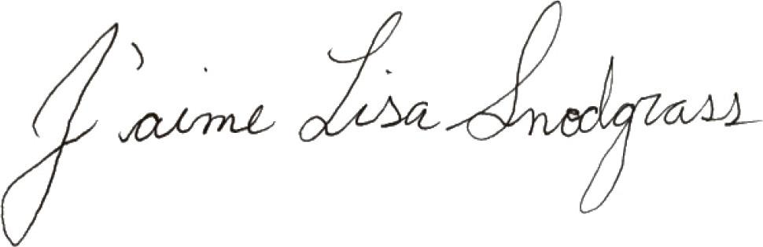

MERCREDI
Je suis un bébé. Je peux conduire ta voiture.
(Et tu vas peut-être m’aimer.)
Il tombe de la neige fondante. Elle laisse des traînées grises dans la fenêtre de la cuisine. Mary Rose jette un coup d’œil au chef-d’œuvre de Maggie sur la table de bricolage. La page est maintenant couverte de ses zécritures. Se pourrait-il, se demande-t-elle, que Maggie parvienne à li’e ce qu’elle a zécrit ? S’agit-il d’une forme de littératie infantile qu’elle désapprendra en vieillissant ? Peut-être la petite est-elle une copiste transcrivant la chronique d’un autre monde, les plumes des bébés dévoilant les secrets de l’univers, si seulement nous savions les traduire… une pierre de Rosette cosmique. Elle devrait noter cette idée pour le troisième volume de la trilogie. Elle demeure toutefois immobile devant la page, à demi concentrée… et son intuition se confirme : il y a bel et bien un message secret. Il miroite sous le voile de couleur, les surfaces, et Mary Rose parvient à lire : AVIS DE SUSPENSION DE LA LIVRAISON À DOMICILE.
Assise dans sa chaise haute, Maggie redistribue son gruau autour de son bol Bunnykins.
— C’est un beau dessin, Maggie, mais tu as pris une feuille qui appartenait à mama.
— Lapin remplit voiture, répond Maggie.
— Maggie…
Je ne suis pas en colère. C’est un bébé et elle a fait quelque chose de magnifique.
— C’est pour maman ? À son retour ?
Maggie secoue la tête en souriant d’un air rusé. Mary Rose lui rend son sourire : elle sait que la patience dont elle a fait preuve dans les marches et pendant le trajet jusqu’à l’école, sans parler de la tolérance phénoménale qu’elle vient d’afficher à propos du formulaire, sera bientôt récompensée. De toute évidence, c’est pour elle que Maggie a exécuté son chef-d’œuvre avec amour : mama.
— Candies, dit Maggie.
Mary Rose sent le sourire se figer sur ses lèvres.
— C’est gentil, Maggie. Candace va être très contente.
Maggie soulève et brandit son bol, assez vide désormais pour laisser voir les Bunnykins déposer un pique-nique dans le coffre de leur Coccinelle VW – les fabricants, apparemment, ignoraient que le coffre d’une Coccinelle se trouve à l’avant, anomalie qui, soupçonne Mary Rose, fera du bol un article recherché par les collectionneurs. Elle le reprend avant que Maggie le laisse tomber par terre ; pendant ce temps, le gruau de Matthew refroidit. Elle s’avance jusqu’au pied de l’escalier et l’appelle. Pas de réponse. Elle monte dans sa chambre.
Il est assis au bord de son lit. Il a réussi à enfiler son maillot de corps, son pantalon et une chaussette – il a commencé à s’habiller tout seul et Mary Rose a appris à fermer les yeux sur les chemises à l’envers et les chaussettes dépareillées.
— Tu as besoin d’aide, mon chou ?
Il éclate en sanglots.
— Matthew, mon amour, qu’est-ce qu’il y a ?
Le chagrin du garçon exerce toujours une pression mortelle sur le cœur de Mary Rose, comme si le coin qui lui était attribué avait été attendri par une blessure préalable. Il garde le silence, tête baissée.
— Qu’est-ce qui se passe, mon ourson ? C’est Tico ?
Elle jette un coup d’œil dans le dédale plastifié de tunnels et de petits compartiments, mais le hamster, roulé en boule, respire dans sa cage. Dieu merci.
Elle s’assied à côté de Matthew. Il serre un objet dans sa petite main.
— Qu’est-ce que tu tiens ?
Il gémit.
Tout doucement, elle tente de l’obliger à desserrer le poing. Il s’esquive, mais pas avant qu’elle ait eu le temps de voir ce qu’il renferme. Du verre.
— Tu t’es coupé ?
Il secoue la tête en évitant de la regarder dans les yeux.
Elle jette un coup d’œil au bord de la fenêtre. La licorne de verre est à sa place, décapitée.
Non !
— Que s’est-il passé ?
Il secoue encore la tête.
D’une voix égale, elle demande :
— C’est Maggie qui est entrée dans ta chambre et qui a fait tomber la licorne ?
Pas de réponse.
Elle se lève. Avant même qu’elle ait atteint la porte, le cri lui échappe :
— Maggie !
— Non ! hurle Matthew, hystérique. Non, non !
Il ponctue chacun des mots d’un coup de poing sur sa propre tête. Elle accourt et lui agrippe le bras.
— Tout va bien, mon lapin. C’est un accident. Donne la tête de verre à mama, s’il te plaît, je ne veux pas que tu te coupes.
Elle passe le bras autour des épaules du garçon et lui ouvre la main. Elle prend la tête avec sa corne minuscule. Rien qu’un peu de Krazy Glue ne pourra arranger. Elle glisse l’objet dans sa poche.
— Mama peut la réparer.
— Je veux pas que tu la répares.
— Mais pourquoi, Matthew ?
Il pince les lèvres.
Elle l’embrasse sur la tête.
Il se crispe.
— J’aime pas ça quand tu cries.
Elle dépose son fils à l’école, puis se dirige vers le Whole Foods. Au milieu du quartier huppé de Yorkville, elle aperçoit l’immeuble où elle s’est fait hypnotiser. Par miracle, il y a une place de stationnement libre juste devant. C’est un signe. Elle s’apprête à s’y garer lorsqu’elle voit son comptable sortir du bâtiment – elle passe la marche avant et s’éloigne.
Sans doute s’était-il rendu dans un autre bureau – il y a une société spécialisée dans le traitement de la paie, là-dedans –, mais elle y voit un autre signe : si un hypnotiseur réussit à lui faire oublier la douleur dans son bras, que pourrait-on dérober de plus dans son portefeuille psychique ? Peut-être aussi est-ce signe qu’elle dépense trop au Whole Foods. Elle fait demi-tour et se dirige vers son quartier. Il commence à pleuvoir.
Dans le rétroviseur, elle jette un coup d’œil à Maggie qui, ficelée dans son siège, s’amuse avec des contenants empilables. Elle n’a pas cessé de babiller, là, derrière. Pas de dodo, ce matin. Après les courses, elles pourraient arrêter au Early Years Drop-In pour permettre à Maggie de courir et de renforcer son système immunitaire en jouant avec des jouets grouillant de microbes. Le service de garde sans rendez-vous se trouve dans le centre communautaire du parc du quartier. Mary Rose y a fait un saut en février dernier et s’est assise sur une minuscule chaise en plastique dans un gymnase étouffant, au milieu de petits enfants qui titubaient et rongeaient des objets divers, tandis que, dehors, tombait de la neige fondante. Une séduisante maman plus jeune – elles étaient toutes plus jeunes – était assise à côté d’elle. Elle s’appelait Anya. Jolie, mais fatiguée, ses cheveux rebelles coiffés en queue de cheval, sa tenue de yoga Lululemon ayant fait un tour de piste de trop dans la sécheuse. À la voir, on avait l’impression qu’elle avait été au sommet de sa forme environ deux ans plus tôt. Anya s’est mise à parler et Mary Rose a vite compris qu’elle ne pouvait pas s’arrêter. Son sourire était adorable, malgré ses lèvres gercées, et elle parlait vite, les yeux rivés sur ses deux tout-petits. Elle a raconté à Mary Rose sa fausse couche. Survenue la semaine précédente.
Mary Rose passe devant Honest Ed’s d’un côté, Secrets From Your Sister de l’autre, s’engage dans le coin des restaurants coréens. Elle tourne à droite et le grand bassin formé par le parc Christie Pits s’étire sur sa gauche. L’ancienne carrière de gravier constitue une enclave verte au cœur de la ville : on y trouve une patinoire en plein air, une piscine, un terrain de jeu. En hiver, c’est la destination de choix des néo-Canadiens qui s’initient à la glissade ; en été, le parc attire des vedettes du soccer autoproclamées au torse nu, issues de toutes les nations du monde où-on-ne-joue-pas-au-hockey. Les soirs de canicule, un lampadaire géant éclaire le terrain de base-ball, où des parties sérieuses sont commentées de la cabine et applaudies du haut de la colline. Au début des années trente, le parc a été le théâtre d’émeutes déclenchées par une swastika brandie lors d’une partie de base-ball, mais Toronto, comme une bonne partie du Canada, a la mémoire sélective : c’est ainsi que seule une infime minorité des maîtres qui promènent leur chien dans le parc aujourd’hui ont une idée de son passé parfois douteux. Elle entre dans le vaste stationnement du supermarché Fiesta Farms – entrepôt sans grâce à l’extérieur, véritable jardin d’Éden à l’intérieur.
Elle dépose Maggie dans le chariot et lui tend un récipient antidégât rempli de petits lapins au cheddar biologique. Mary Rose adore Fiesta Farms. Le présentateur des nouvelles de la CBC y fait ses courses – il a l’air bizarre, sans cravate. Sa voisine italienne, la vieille dame qui a une Vierge Marie sur son terrain, y fait ses courses…
— Allô, choupette, comment vas-tu ? Et les enfants, ça va ?
— Salut, Daria. Ils vont super bien, dis bonjour, Maggie.
Drôle, tout de même, de penser à quelqu’un et de tomber sur…
— Salut, Da’ia.
— Ma bellissima !
Elle donne à Maggie un Kiss en chocolat d’Hershey sans demander la permission à Mary Rose – Daria est de la vieille école.
— Prends-en un autre pour Matthew, O.K., choupette ?
Mary Rose se dirige vers le rayon des produits laitiers et tombe sur un musicien couvert de tatouages qu’elle croisait autrefois dans les réceptions. Il porte le feutre rond qui ne le quitte jamais, mais aussi un bébé sur la poitrine. Elle lui parle des couches jetables recyclables qu’Hil et elle ont découvertes, et il lui répond qu’il n’y en a plus que pour les papayes. Il a le regard vitreux des biberons à quatre heures du matin, ils parlent rapidement et poursuivent leur chemin en initiés conscients de la futilité des mondanités.
Dans l’allée des pâtes alimentaires, elle aperçoit Anya – y a-t-il donc quelque chose de spécial, aujourd’hui ? Si elle pense à Renée, va-t-elle apparaître comme par miracle, elle aussi ? Anya a ses deux petits avec elle. Elle est très jolie, elle a l’air moins fatiguée, ses cheveux sont lustrés. Mary Rose éprouve un élan de sympathie pour elle.
— Salut, Anya, dit-elle en ralentissant son chariot avec bienveillance, prête à essuyer un tsunami de bavardages. Mais Anya lui sourit, passe sans s’arrêter – de toute évidence, elle ne l’a pas reconnue – et disparaît derrière une pyramide de biscottes Paris Toasts.
Mary Rose essaie de s’imaginer en train de révéler à une parfaite inconnue chaque triste détail du bébé qu’elle a perdu pour aussitôt tout oublier. Peut-être a-t-elle fait la même chose sans en garder le moindre souvenir. C’est justement ça, oublier… Elle s’immobilise, momentanément prisonnière de sa psyché, semblable à une gravure d’Escher, et se demande, pas pour la première fois d’ailleurs, dans quelle mesure un ensemble de faits convenus, conjugué à une mémoire fonctionnelle, détermine la réalité. Qu’est-ce donc qui la retient, bien ancrée, dans le moment présent ? Pourquoi ne chute-t-elle pas à travers le temps dans un vertige où se pulvérise l’identité ? Anya se rend-elle compte qu’il lui manque un pan de sa vie ? Sa psyché a-t-elle plaqué un souvenir étranger sur le trou de mémoire ? Anya a-t-elle plutôt arraché le souvenir elle-même et suturé la plaie ? A-t-elle une cicatrice ? Oui, mais elle serait incapable d’en expliquer l’origine. C’est justement ça, une « cicatrice invisible ».
— Paix, mama ? demande Maggie, gentiment.
— Bien sûr, répond Mary Rose.
Elle laisse Maggie choisir les pâtes.
— Me’ci, mama.
Si, par incontinence, Mary Rose décidait de se confier à une inconnue, il ne serait pas question d’un bébé mort – ça, c’est le numéro de sa mère. Bien qu’elle puisse sembler sans cœur en qualifiant cette propension de « numéro » – même dans son for intérieur –, le mot rend bien compte du rythme et du ton à l’ancienne, typiques de la ceinture du bortsch, qu’adopte sa mère pour répéter ces histoires. Les traumatismes s’expriment souvent par le caquetage.
Elle cherche ses lunettes de lecture et examine les ingrédients d’une boîte de soupe de tomates. Le contenu est bio, mais les parois de la boîte contiennent des toxines. La soupe dans le pot en verre, cependant, n’est pas bio… Elle sursaute en entendant quelqu’un bêler son prénom, comme si un goéland l’avait embroché. Elle se retourne. La dominant d’une tête, une femme plus jeune – évidemment – lui sourit de toutes ses dents, un bébé dans son chariot, à ses pieds un tout-petit qui a commencé à vider la tablette du bas. Elle a l’accent britannique.
— Maggie te ressemble un peu plus chaque jour, Mary Rose !
Mais oui ouose, prononce-t-elle.
— Pas vrai, Miss Maggie ?
La femme a de grandes dents carrées. Qui est-elle ?
Elle se lance dans le récit d’un déménagement imminent, comme si elle poursuivait une conversation antérieure : son mari a été muté à Columbus, dans l’Ohio, et il est parti en éclaireur, la laissant derrière, avec les enfants, pour vendre la maison et organiser le déménagement. Pour Mary Rose, le moment est mal choisi d’exercer sa rectitude politique. « En fait, je ne suis pas la mère biologique de Maggie. Je suis son Autre Mère. » D’ailleurs, elle ne réussit pas à placer un mot. La femme, qui parle à n’en plus finir d’un incident au cours duquel elle a failli mettre le feu à la chaussette de son bébé en remuant sa sauce à spaghettis (elle hurle de rire), est stationnée devant le magasin et craint d’attraper une contravention.
— Je reviens de suite, Mais oui ouose ! s’écrie-t-elle.
Elle court dans l’allée, contourne une colonne de boîtes de sel casher et disparaît. Mary Rose baisse les yeux sur les enfants.
— Salut, les amis.
Maggie entreprend de descendre du chariot. Mary Rose s’apprête à la retenir, mais, se ravisant, la soulève et la pose sur le sol, où elle distrait le bébé en plus de s’amuser avec le tout-petit. Mary Rose joue à coucou avec les trois. Au bout de dix minutes, elle se demande si elle devrait prévenir quelqu’un, faire appeler la femme. Était-elle enjouée ou hystérique ? Réclamait-elle de l’aide avec un large sourire plaqué sur le visage ? Après tout, de son propre aveu, elle avait failli incinérer son enfant – certains soutiendraient que les accidents n’existent pas. Que deviendront ces enfants si leur mère les a abandonnés dans l’allée des pâtes alimentaires ? Leur destin sera-t-il inextricablement lié à celui de Mary Rose ? Des lignes au départ parallèles finiront-elles par se croiser ? Le fait qu’ils soient dans l’allée des pâtes alimentaires plutôt que dans celle des condiments change-t-il quelque chose à l’affaire ? Au moment où Mary Rose s’apprête à aller chercher le gérant, la femme revient au pas de course sans s’arrêter de sourire et de parler. Elle continue de papoter tandis que Mary Rose s’esquive du côté du houmous.
Où est-elle allée ? Peut-être s’est-elle enfuie avant de se raviser. Peut-être a-t-elle songé à grimper sur le trottoir au volant de sa fourgonnette, à plonger dans le parc Christie Pits, à accélérer et à foncer tout droit sur la base du lampadaire en béton, le capot enfoncé fumant, le klaxon coincé jouant sa note unique. Qui donc vient en aide à ces femmes ? Toutes ces femmes logorrhéiques, puits sans fond de bavardages avec leurs histoires drôles remplies de souffrance et de pertes, de trahisons et d’ahurissement – je ne pleure pas, moi, alors ne pleurez pas.
Mary Rose choisit trois citrons et se dit que les femmes ont effectivement tendance à caqueter face au traumatisme – ce sont des sortes de Cassandre inversées qui rient devant les portes, C’est arrivé, c’est arrivé, c’est arrivé ! Et le Feutre rond, lui ? S’en sort-il mieux qu’elles ? Chez les hommes, cela peut prendre des formes différentes. Elle songe à son père avec son arbre généalogique aux innombrables ramifications – « Tu vois, ici ? En 1794, on a Angus MacKinnon, qui aurait possédé trente-neuf moutons, il faut savoir que, dans ce temps-là… –, où tout est souligné à gros traits, l’équivalent, sur le plan verbal, de marcher avec des prothèses, une syllabe laborieusement placée après l’autre. Avec l’âge, leurs dissertations deviennent des îles de cohérence, détachées du continent : « Il a fallu une commission gouvernementale sur l’analyse des systèmes pour analyser systématiquement… » « Je vais pousser votre fauteuil dans le solarium, monsieur _____. » Bien qu’ils paraissent plus équilibrés que les femmes, les hommes sont parfois portés à étendre des informations riches et crémeuses sur des choses qui hurlent tout aussi fort. Dans le rayon des fruits et légumes, Mary Rose s’immobilise, saisie : peut-être la femme avec ses Mais oui ouose poursuivait-elle effectivement une conversation antérieure amorcée avec elle, une conversation dont Mary Rose ne garde aucun souvenir. Quelle part du pétrole brut de son cœur avait-elle déversée dans l’oreille de la géante au sourire comme un raid aérien ? Elle a beau sonder sa mémoire, que le mot soit prononcé avec l’accent britannique ou non, elle ne trouve aucune fausse couche. Et bien qu’elle s’efforce avec irrévérence de repousser cette idée, ses mains qui palpent un avocat sont glacées.
— Comment ça va, ma Fofolle ?
Pourquoi me suis-je permis de penser à Renée ?
— Salut, Renée.
Que je ne me permettrais jamais d’appeler « Doudoune ».
— Salut, Maggie. Contente de te voir, petite. Tu aimes encore les chats ?
Maggie adore Renée. Mary Rose se fait la réflexion que le narcissisme de Renée convient parfaitement aux enfants – un peu comme celui de Dolly. Au bout de quelques secondes, Maggie est fascinée par le collier de Renée – mélange hétéroclite de gaines de fil électrique, de coquillages et d’os de renard que Mary Rose a découverts à l’occasion de leur dernier voyage de camping. Maggie examine le collier avec attention. Renée se penche et sa crinière ondulante de cheveux auburn encadre son visage, de plus en plus bouffi avec l’âge, mais aussi plus radieux. Néanmoins, il est trop tôt pour porter un décolleté aussi plongeant, non ? Mary Rose est tiraillée entre deux pulsions jumelles : se sauver à toutes jambes et se perdre dans un gros câlin étouffant. Quelque part dans un univers parallèle, le passé joue comme un film en reprise dans lequel elle aime et désire une Renée mince et souple, celle dont les baisers goûtaient les Camel et la tequila, la gouine aux cheveux violets coupés en brosse et aux trois boucles d’oreilles en argent qu’elle vient de rencontrer au brunch du défilé de la fierté gaie. Avance rapide jusqu’à la codépendance qui chérit, puis périt, à la pénurie, puis à l’agonie des rapports sexuels, aux disputes et aux gifles induites par l’alcool, au départ de Mary Rose au volant de sa Rabbit de VW dont la boîte de vitesses grince, tandis que Renée, belliqueuse, en larmes et en chômage, reste plantée sur le perron. Jusqu’au supermarché Fiesta Farms, en ce mercredi matin.
— Passe me voir avec les enfants, un de ces jours.
— D’accord.
— Je mettrai du plastique par terre et on fera de la peinture gestuelle avec des teintures végétales.
— Super.
Mary Rose est devant la caisse. Maggie lui tend les provisions à déposer sur le tapis roulant – Mary Rose respire la patience. Elle n’a aucune raison de se dépêcher, se dépêcher n’est qu’une habitude, un explosif métabolique. C’est à cette propension à toujours se hâter qu’elle doit sa belle situation d’aujourd’hui, mais, si Mary Rose ne sort pas de sa torpeur, si elle ne regarde pas la réalité en face, ce penchant risque aussi de lui valoir un trouble auto-immun qui porte de nos jours vingt-cinq noms différents, mais qui, autrefois, n’en avait qu’un : « hystérie ».
— Beau travail, Maggie.
L’homme derrière elle dans la queue lui fait les gros yeux. Mary Rose sent des picotements sur son crâne. Il soupire. Elle le dévisage, prête à péter les plombs. Vas-y, allez ! Fais-moi plaisir ! Il détourne le regard. Maggie lui tend les pommes, une par une.
C’est vrai que Maggie lui ressemble. Beaucoup d’enfants lui ressemblent, elle a de beaux traits génériques. Tous les bébés ressemblent à Winston Churchill et tous les enfants lui ressemblent à elle. Et tous les hommes blancs ressemblent à son frère.
Dans la voiture, elle boucle Maggie dans son siège d’auto quand, sans crier gare, la petite la serre dans ses bras avec férocité et laisse entendre un rugissement de bonheur. Il valait la peine de subir le pénible exercice de vidage du panier, une pomme, une boîte et un tube à la fois. Son téléphone vibre dans sa poche. Elle se redresse pour l’en sortir et se cogne la tête sur le cadre de la portière…
— Merde !
Maggie rit. Sur l’afficheur, elle lit Harlots. Les putes ?
— Allô ?
Andy-Patrick téléphone d’un salon de coiffure de Queen Street.
— Il faut que tu viennes voir ça, Mister. J’ai l’air de Billy Idol sans les traces de piqûres.
Il passe son appareil à la coiffeuse, et Mary Rose et elle plaisantent comme de vieilles amies. La fille lui demande si « Andrew » est acteur : elle n’arrive pas à croire qu’un type aussi cool soit policier.
— Hé, Maggie, que dirais-tu d’aller voir ton oncle Andy-Pat ?
Elle roule dans Queen Street et, à la faveur d’un autre épisode de karma favorable, trouve une place à quelques pas du salon. Elle détache Maggie et la sort de la voiture. Elle la laisse marcher. Il a cessé de pleuvoir.
C’est une belle journée, en fin de compte, malgré la grisaille. Maggie est super gentille… un vrai « vieux pote ». Mary Rose décide de ne pas lui parler de la licorne cassée. Évidemment, Maggie convoite les objets précieux de son frère. Peut-être même a-t-elle fait exprès de casser la licorne. À deux ans, elle est capable de tout, mais coupable de rien. Pourtant, le cœur de Mary Rose se serre à la pensée de Matthew, ce matin, qui protégeait sa sœur en affirmant que c’est lui qui avait cassé la licorne.
Sans se presser, elles passent devant une petite galerie d’art et un attroupement d’hommes sans abri devant la St. Christopher House, puis elles arrivent au feu.
— De quelle couleur est le feu, Maggie ?
— Ve’.
— Bien !
Elles entrent dans le salon de coiffure qui vibre aux accents d’une chanson non familière qui en a pillé une autre, familière celle-là… une chanson folk arrangée à coups de fouets et de chaînes. Mary Rose balaie des yeux l’alignement de coiffeuses sérieusement hip, dont les ciseaux mordillent la nuque des clients, les séchoirs positionnés sur des têtes luisantes. Andy-Pat n’est nulle part en vue. Il doit être aux toilettes.
La réceptionniste gothique écoute Mary Rose d’un air absent. Est-elle droguée ? Elle la reconnaît peut-être – elle est assez jeune pour être une de ses fans. Le piercing qu’elle a au cou est singulièrement charmant. Elle tourne sa tête aux cheveux de jais et annonce :
— Cette dame cherche son frère.
Autrefois, Mary Rose habitait, au-dessus de la Légion, un véritable loft – et non un « espace aménagé en loft » – dans ce bout de rue, bien avant qu’il devienne branché. Elle faisait du mime radical dans la rue et portait un blouson de moto pendant tout l’hiver, à l’époque où les hivers étaient encore froids, elle n’est « cette dame » pour personne – tu vas le regretter, ce tatouage, espèce de crétine de banlieue.
La fille se tourne vers Mary Rose.
— Vous l’avez raté de peu, madame.
À quoi s’attendait-elle ? Elle a botté le ballon de football et s’est une fois de plus retrouvée sur le dos – son frère est probablement déjà rentré chez lui avec la coiffeuse. A-t-il mentionné le nom de Mary Rose pour parvenir à ses fins ? Ce ne serait pas la première fois.
— Je m’essuie les pieds sur le paillasson, et je rentre dans la maison ! chante-t-elle en remettant Maggie dans son siège d’auto.
— Non !
Maggie ne veut pas rentrer, elle veut voir oncle Andy-Pat. Mary Rose s’insère dans la circulation – elle devrait téléphoner à quelqu’un, organiser une journée de jeux impromptue. Sue, par exemple – mais alors, elle devra l’écouter raconter par le menu sa randonnée sur le sentier de la Côte-Ouest en compagnie de son mari, Steve, et, va savoir comment elle s’y est prise, de leurs deux enfants et de leur bébé. Soudain, le pare-brise crépite sous la grêle. Maggie cesse de crier.
— Regarde, Maggie, le ciel nous tombe sur la tête.
Non.
— Pas vraiment, mon amour. C’est juste de la grêle.
— La gale !
Exactement.
Elles pourraient s’arrêter au service de garde – il fait largement assez moche pour cela, mais elles risquent de tomber sur la joviale abandonneuse d’enfants britannique. Elles devraient peut-être passer voir Renée, elle ne fume plus dans la maison et les sculptures de vagin ont presque toutes été vendues – elle a tenté de convaincre Mary Rose de « poser » pour l’un de ces machins, peu avant leur rupture, mais quelque chose l’a poussée à refuser, preuve que les anges gardiens existent bel et bien. Elle compose le numéro en conduisant, mais elle utilise le haut-parleur.
— Salut. Dis donc, tu as encore envie de faire de la peinture gestuelle ?
— Quoi ? Oh. Hm. Tu sais quoi, ma Fofolle, je suis crevée, là, tout d’un coup. C’est à peine si j’ai eu la force de décrocher le téléphone. Je pensais que c’était la femme de ménage qui rappelait. J’ai dû annuler, c’est trop de stimulations pour moi.
— Ça va ? Tu veux que je t’apporte quelque chose ?
— Nooon, fait-elle.
C’est le registre supérieur et résigné d’une invalide légère.
— J’ai besoin d’un peu de repos pour recharger mes batteries créatives.
Elle est au lit avec les chats, le dernier Alice Munro et une boîte de Timbits. Grand bien lui fasse.
Un coup d’œil dans le rétroviseur révèle que Maggie s’est endormie.
— Maggie, réveille-toi, ma puce ! Réveille-toi !
Si elle dort ce matin, elle ne dormira pas cet après-midi.
— Où est Daisy, Maggie ?
Elle voit Maggie ouvrir les yeux, poser un regard existentiel sur le monde et comprendre qu’il n’y a pas de chien. Son visage – et peut-être aussi sa foi – se désagrège, et elle pleure. C’était un coup bas, mais Mary Rose est parvenue à ses fins.
— Daisy nous attend à la maison, ma puce.
Le vagissement pitoyable se transforme en hurlement au moment où elles tournent dans Bathurst Street, direction nord.
Mary Rose allume le dispositif antibuée et se rappelle le paillis. Il faudra qu’elle en épande dans le jardin avant le gel. Puis elle se rappelle que c’est le mois d’avril. La faute au changement climatique ? À moins que ce soit le signe que quelque chose mijote au fond de son esprit. Le troisième volume de la trilogie, en gestation… filtré par le Temps… Elle a la certitude, soudain, qu’il y sera question d’un voyage dans le temps… C’est rempli de bon sens. L’Autre dimension avait sa composante spatiale ; elle aura désormais sa composante temporelle.
Elle cherche un stylo dans la boîte à gants. Dans le rétroviseur, elle voit Maggie, le visage barbouillé de larmes, mais calme, qui agrippe un crayon de cire.
— Donne à mama, Maggie.
— Non.
Mary Rose étire le bras vers l’arrière de la voiture, sa main comme la tête d’un anaconda à la recherche d’une proie. Son téléphone sonne : Cap. A.P. MacKinnon. En Ontario, la loi ne permet plus de parler au téléphone au volant, mais elle répond quand même – après tout, c’est un policier qui l’appelle.
— Où es-tu passé ? Je suis allée jusqu’au salon de coiffure pour te voir.
Il ne répond pas. Elle entend, de son côté à lui, le souffle de la réalité ambiante, oooush.
— A&P ? Allô ? C’est quoi, ce bruit ? Où es-tu ?
Il avale de l’air.
— Tu pleures ?
Mon Dieu ! C’est maman, c’est papa, le coup de fil tant redouté – elle a toujours cru que ce serait Maureen qui lui apprendrait la nouvelle.
— Qu’est-ce qui s’est passé ?
— Rien, halète-t-il. Je ne… Je ne peux pas…
— Respire, Andy-Patrick.
Personne n’est mort. Il fait une crise de panique.
— Où es-tu ?
— Ma voiture.
— Tu ne devrais pas parler en conduisant.
Elle donne un coup de volant pour éviter un cycliste et s’engage dans sa rue. Maggie proteste de plus belle.
— Je ne te parlerai que si tu es rangé sur le côté.
— Bon. Je me suis arrêté.
— La voiture est immobilisée ?
— Ouais.
— O.K. Qu’est-ce qui ne va pas ?
Il y a eu un déclencheur – il ne sait pas quoi, au juste – et il ne trouve pas l’interrupteur. Maureen a hérité d’un trouble auto-immun plutôt pépère, tandis que les deux cadets MacKinnon, eux, sont unis par une propension à des crises de vaine panique : un plongeon banal dans une zone de terreur à vous glacer les entrailles, où le moi sombre sans laisser de traces. Sans rime ni raison. Crises parfois accompagnées de phénomènes visuels, de tachycardies et de spasmes œsophagiens, certaines restrictions s’appliquent, pour plus de détails, consultez notre site web.
— Où es-tu ? demande-t-elle. J’arrive.
— Sur la 401, à Cobourg.
Il a dû rouler à tombeau ouvert !
— Je ne peux pas aller jusque-là. Je dois passer prendre Matthew à l’école à midi.
Elle se gare dans l’entrée, met la voiture en position de stationnement, coince le téléphone entre son visage et son épaule, se penche pour défaire la ceinture de sécurité en cinq points. Maggie en profite pour lui asséner un coup de poing sur l’oreille. Elle transporte sa fille et son frère, tous deux en larmes, jusqu’à la porte.
— Je ne sais pas ce que j’ai, Mary Rose. Je ne peux pas m’arrêter. Je vais descendre de la voiture et me lancer sur l’autoroute, je ne peux pas… je ne peux pas… je ne peux pas.
— Reste dans la voiture.
Méga-autoroute à six voies.
— Tu m’entends ? Réponds-moi.
— O.K.
— Maintenant, respire par le nez. Tout va s’arranger.
En entrant et en gravissant les quatre marches de la cuisine, elle l’entend respirer convulsivement. Maggie se laisse consoler par Daisy, qui s’attaque aussitôt aux joues salées de la petite, tandis que Mary Rose va prendre dans le réfrigérateur la drogue de choix de sa fille, du jus de mangue – bio, mais les mangues viennent de Chine, alors…
— Tu es toujours en thérapie, Andy-Pat ? Tu vois toujours ta psychothérapeute ? Comment s’appelle-t-elle, déjà ?
— Amber.
— C’est une vraie psychothérapeute ? On dirait plutôt une stripteaseuse.
Il rit. C’est mieux.
— C’est une vraie, dit-il.
— Tu la vois toujours ?
— Non, ouais, mais…
Il a couché avec elle – oh ! pour l’amour du ciel –, Mary Rose ne veut rien savoir de plus, mais elle se promet de retrouver cette Amber pour lui réclamer l’argent de ses impôts. Elle va punaiser un bout de papier sur le tableau d’affichage, à côté de l’aimant à l’effigie du clown mort : Amber, cinq mille dollars.
— Mary Rose ? Pourquoi est-ce que je suis aussi taré ?
— Tu n’es pas taré. Bon, un peu, tout de même, mais dans les limites de la normalité, je pense. Pour un policier blanc et hétéro.
— Tu veux que je te dise ?
Elle l’entend se racler la gorge, refouler de nouvelles larmes.
— Je vous aime plus que tout au monde, Maureen et toi. Sans vous, je serais mort.
— Non, mais tu serais peut-être un peu moins taré.
— C’est ce que papa répétait toujours.
— Il avait peur que le fait d’avoir deux sœurs fasse de toi un homosexuel.
— Ironique, non ? J’aimerais bien être gai, moi.
— Voyons donc.
— Mary Rose ? Comment se fait-il que…
Il s’interrompt, pleure de nouveau, à la façon d’un garçon qui résiste à l’humiliation des larmes.
— Tout va s’arranger, Andy-Pat. Andy-Pat ? Je t’aime. Maggie est là. Tu veux lui dire bonjour ?
— Qu’est-ce qui ne va pas chez moi, Mister ?
— Shereen est partie.
Leurs crises de panique sont peut-être toutes, au fond, des chorégraphies du chaos ayant pour but de fuir cette chose silencieuse qui se tapit derrière le rideau : la perte.
Il gémit. Elle se met à chanter :
— Boum, boum, j’adore ça, être fou…
Dans la voiture, ils avaient l’habitude de chanter cette chanson entre deux arrêts pour cause de nausées de Mary Rose. En chantant doucement, comme si c’était une berceuse, elle se demande, détachée : comment en suis-je arrivée là ?
— Pas celle-là, l’autre, dit-il.
Elle chante la chanson au complet. Au moment où on demande où sont allés tous les soldats, elle l’entend se moucher.
Puis, d’une voix rauque, mais ferme, il dit :
— Pourquoi est-ce que tu m’aides toujours, Mister, alors que moi je ne t’aide jamais ? Je n’aide jamais personne. C’est papa qui avait raison : je suis un raté, une nullité.
— C’est faux. Il était probablement juste jaloux.
— Hein ? Pourquoi ?
— Parce que tu avais un père, toi.
— … Wow.
— Ce sera cent vingt-cinq dollars plus la TVH, merci.
— Tu vois ? geint-il.
— Tu m’as déjà aidée.
— Quand ça ?
Aucun exemple ne lui vient à l’esprit. Maggie renverse son jus et s’en sert pour faire de la peinture avec ses doigts. Daisy en lèche – plus tard, elle aura la diarrhée, son système est très délicat.
— Tu m’aides en étant mon frère.
Elle a parlé comme une carte Hallmark, mais soudain le mot frère lui fait mal, comme une écharde dans la gorge. Elle ne doit surtout pas se mettre à pleurer elle aussi. Par la fenêtre de sa cuisine, elle voit passer un joggeur impassible d’âge mûr. Cet homme, c’est l’ici et maintenant.
— Il vaut mieux que j’y aille, dit-il.
Il est de retour.
— J’ai l’air d’avoir pleuré.
— On va penser que tu as la gueule de bois comme tous tes collègues.
— Je suis un homme.
— Tu l’as dit, bouffi.
Il est en route vers Kingston où, aux côtés du premier ministre de la province, il assistera au dévoilement d’un nouveau monument à la mémoire des militaires « tombés » en Afghanistan. Comme s’ils avaient perdu pied au lieu de perdre la vie. Regarde Jane tomber ! Il lui demande s’ils peuvent prendre un café ensemble, le lendemain matin, à neuf heures.
— Bien sûr. Je passerai après avoir déposé Matthew à l’école à huit heures quarante-cinq.
Soudain, elle s’en veut d’avoir été si fâchée contre A&P à cause du lapin qu’il lui a posé au salon de coiffure. Hil a vu juste : il est bel et bien en état de crise. Sa frénésie de consommation et de bichonnage, au lendemain d’une rupture, aurait pourtant dû lui mettre la puce à l’oreille, lui indiquer que l’écrasement était imminent. Sous le coup d’une déception sentimentale, il était une fois de plus tombé amoureux de lui-même et, toqué de sa propre image, s’était rendu compte qu’il n’avait personne d’autre à prendre dans ses bras – bref, l’horreur* existentielle. Pourquoi son frère et elle ne peuvent-ils pas se permettre d’être tristes quand les circonstances le sont ? Triste = Larmes = Réconfort. Même Maureen pleure. Pourquoi A&P et elle éprouvent-ils le besoin de faire tant d’histoires ? Clowns cinglés.
Ils raccrochent. Elle se réjouit à l’idée de le voir demain, de prendre un café avec lui dans une atmosphère détendue. Elle arrache une pile de serviettes en papier et essuie le dégât mangueux que Maggie a fait par terre. Mary Rose a contrevenu à une règle cardinale du Guide de survie à l’intention des parents : ne versez que ce que vous êtes prêt à éponger.
— Non ! crie Maggie d’une voix stridente.
Mary Rose a oublié qu’il s’agissait d’une œuvre d’art. Maggie se lamente amèrement et gratte le sol de ses mains poisseuses, son désespoir digne d’une Troyenne. Mary Rose se penche pour soulever la petite par-derrière au moment précis où celle-ci se met debout. La tête de Maggie heurte violemment l’arête du nez de Mary Rose.
— Oh mon Dieu !
Pas de sang. Que des étoiles.
C’est la rançon du sevrage brutal – elle ne partira chercher Matthew que dans quarante-cinq minutes, largement le temps d’une mini-sieste pour Maggie, une sieste induite par la méthadone. Mary Rose elle-même aurait bien besoin d’une « absence » de vingt minutes. Que ferait Hil, à sa place ?
Elle ouvre le robinet, le met en mode « pluie » et le sort de sa base rétractable.
— Tiens, Maggs… Vise l’évier, comme ça. L’évier !
Mary Rose se met à l’abri devant le petit évier de service, où elle sort les fruits et légumes du sac et entreprend de les laver.
Elle achète des produits biologiques, mais évite carrément le sujet avec sa mère, à qui le mot arrache des reniflements de mépris.
— Je n’achète rien de biologieque !
Son père prend plaisir à demander avec un scepticisme qu’on croirait sorti tout droit du MBA :
— Qu’est-ce qui te dit que c’est biologieque ? Tu as des preuves ?
Mary Rose leur a expliqué que le biologique n’est pas nouveau, qu’eux-mêmes ont grandi en mangeant des produits biologiques. C’est l’une des raisons qui expliquent que ce sont les hommes et les femmes de leur génération qui atteindront sans doute les plus hauts sommets de la longévité humaine.
— Le bio, c’est de la nourriture, point à la ligne. C’est aux autres trucs qu’on devrait donner des noms composés. Pourquoi pensez-vous que la prévalence du cancer augmente en flèche ? Et je ne vous parle même pas des allergies et de l’obésité !
— Se faire faire la leçon par ses enfants ! déclame Dolly en feignant de gifler Mary Rose.
Mary Rose essaie de ne pas se lancer dans des diatribes, mais ses parents prennent sûrement plaisir à la provoquer. Sinon, pourquoi sa mère verrait-elle les choix santé de Mary Rose comme un rejet de ses propres valeurs ? Après tout, Dolly elle-même lui a indiqué la voie à suivre en optant pour la cuisine libanaise et en refusant obstinément d’acheter du « caca » transformé ? Pourquoi son père s’obstine-t-il à proférer des remarques dignes d’un homme de droite, alors que, dans les faits, il est plus à gauche qu’un grand nombre de personnes plus jeunes ?
Il aime bien attendre jusqu’à la fin de sa visite.
— Je crois comprendre qu’il y a au centre-ville un nouveau garage dont le titre de gloire est qu’il n’emploie que des mécaniciennes. Faire tout un plat avec la question du sexe… Dis-moi, Mister : puisque vous êtes si douées, où étiez-vous au cours des mille dernières années ? Anniées…
Il connaît la réponse, il lui a lui-même appris la réponse, l’a dirigée et encouragée jusqu’à ce qu’elle surmonte tous les obstacles – Fais les choses à ta manière, Mister –, tellement qu’elle est sortie du placard bien avant que quiconque pense que « c’est moins dur avec le temps », stade auquel il a brusquement cessé de l’encourager. Rien de nouveau, pourtant. Ça remonte à l’Allemagne. L’épisode figure parmi ses plus vieux souvenirs.
Assise sur les genoux de son père, elle conduit la voiture – c’était avant l’avènement des ceintures de sécurité et des lois sur la protection des enfants. On ne peut rêver mieux : vous n’êtes pas encore tout à fait propre, mais vous pouvez conduire la voiture.
— Bien, Mister, tourne le volant doucement, tout doucement.
Les mains de son père font un halo sur les siennes, tandis que le volant glisse sous ses doigts. La voiture sent le diesel et le cuir. JE CONDUIS LA VOITURE. Au-dessus du tableau de bord rouge, l’horizon du pare-brise et le nez de clown au centre du volant : le klaxon.
— Tu es une bonne conductrice, Mister.
JE SUIS UNE BONNE CONDUCTRICE.
— Maintenant, changeons de vitesse.
Elle sent la jambe de son père se raidir sous elle au moment où il appuie sur l’embrayage. Elle pose sa main sur la balle du levier de vitesse avec ses bizarres symboles gravés et sent sur la sienne la force de sa main qui les propulse vers l’avant, malgré les bruits sourds émis par la boîte. N’AIE PAS PEUR DE ÇA.
— Bien. Nous sommes maintenant en deuxième.
La tige du levier est empalée dans une sorte de sachet en cuir doux, plissé comme le museau d’un animal qu’on tire violemment par le nez, mais ça ne lui fait pas mal – c’est un objet, voilà tout – et, de toute façon, on n’est pas censé regarder cette partie de la voiture, NE QUITTE PAS LA ROUTE DES YEUX. C’était une Coccinelle VW blanc crème à l’habitacle en cuir rouge. Avec le temps, son père a commencé à la taquiner.
— Dès que le garçon sera né, tu devras t’asseoir sur la banquette arrière et c’est lui qui va conduire.
— Non, moi je conduis.
— Les garçons s’asseyent devant, les filles derrière.
— Non, moi le faire.
— Nan. Tu t’installeras derrière avec ta sœur.
— Non !
— Le garçon sera devant avec moi.
— NON !
Il a ri jusqu’à ce qu’elle aperçoive sa dent en or. La rage lui râpait la gorge comme du gravier – au-dessus du tableau de bord, l’horizon avait disparu en un clin d’œil et Mary Rose se changeait en nœud, comme si elle se barbouillait à l’aide d’un crayon noir. Elle a fini par exploser :
— JE DÉTESTE LE GARÇON !
Mots coagulés, lancés comme de l’encre, elle était noire, mais elle ne se laisserait pas avoir.
La voix de papa est triste, soudain.
— Ne dis pas ça, Mister. C’est juste un bébé. Il va être ton petit frère.
Il a l’air triste et ahuri. Elle lui avait fait du mal. Et elle avait fait du mal à un pauvre bébé si précieux. Son propre frère. La honte l’a envahie, s’est insinuée en elle comme l’odeur tiède et mouillée du pipi.
— Excuse-moi, papa.
Larmes.
À l’époque, il était impossible de connaître d’avance le sexe d’un fœtus. La certitude de son père n’était qu’une façon de prendre ses rêves pour des réalités, mais les événements lui ont donné raison. Le bébé qu’elle a maudit était bel et bien un garçon.
Mary Rose n’a pas besoin de payer un psychothérapeute pour savoir que, dans son for intérieur, elle est certaine d’avoir tué Alexander, de l’avoir dépossédé de son droit de naître et de devoir être punie pour avoir pris sa place dans le siège du conducteur. C’est écrit noir sur blanc dans les pages de son propre livre : Kitty et John McRae sont des jumeaux qui, dans leurs mondes respectifs, se sont absorbés réciproquement in utero et sont nés chacun de son côté. Ils ont l’un et l’autre un œil bleu et un œil brun, vestige de la sœur ou du frère manquant. Et chacun, en naissant, a privé l’autre de ce qui pouvait guérir son monde… Même si Mary Rose ne l’a compris qu’après avoir écrit le deuxième livre.
C’est peut-être pour cette raison qu’elle avait l’habitude d’étudier la photo du cimetière en secret. Elle revenait sur les lieux du crime, emportait l’album dans la salle de bains ou dans le vide sanitaire – presque comme s’il s’agissait d’une photo cochonne – et avait soin de limiter les séances pour préserver la puissance de l’image. Fermant les yeux, elle trouvait la bonne page, comptait jusqu’à trois et les rouvrait… comme pour prendre la photo en flagrant délit. De quoi, au juste ? Une fois, elle a associé Andy-Pat à l’expérience furtive, mais elle a coupé court.
— Tu es trop jeune, a-t-elle décrété en refermant l’album.
Puis elle est sortie en vitesse du vide sanitaire et a refermé la porte sur lui. Elle l’a laissé dans le noir jusqu’à ce qu’il cesse de pleurer.
Est-ce à cause d’elle qu’Andy-Patrick est si perturbé ?
Elle avait cinq ans quand elle a entendu sa mère passer le coup de fil au Cap-Breton. En tenant le combiné à deux mains, elle a dit, d’une voix étranglée :
— Pa ? Pa, j’ai eu un fils ! J’ai eu un fils.
Elle avait neuf ans quand son père a commencé à les convoquer, Maureen et elle, et à leur attribuer, à regret, l’incapacité de leur frère à éviter les ennuis à l’école et à bien s’entendre avec les autres membres de la maisonnée. Sans parler de sa manie de se déguiser en femme.
— N’oubliez pas que c’est un garçon dans une maison remplie de filles. Il n’a pas de frère. Ses sœurs le surpassent en nombre.
Il parlait avec l’application exagérée qu’il réservait aux problèmes de maths et aux indications routières. Mais sur un ton plaintif.
— Vous ne devez pas vous attendre à ce qu’il se comporte comme une fille. C’est un garçon.
Il marquait une pause. Mary Rose sentait la honte, tiède et écœurante, s’infiltrer en elle.
— Mary Rose, comme vous êtes plus rapprochés en âge, c’est toi qui exerces le plus d’influence sur lui.
Quand il utilisait son vrai prénom, elle se sentait épinglée. Voici ce que cachent le surnom de garçon manqué et le clin d’œil insouciant de papa : un prénom de fille. Quand on oublie qu’il est là, il risque de vous faire mal.
— Laisse-le être un garçon.
Peu de choses sont plus honteuses que d’empêcher son frère d’être un garçon – c’est comme faire irruption dans une salle de bains bordée d’urinoirs, pour qui te prends-tu ? Attaquer sa masculinité, cette chose sacrée, puissante et délicate qui l’excluait, mais qu’elle avait le devoir de protéger. L’idée, semblait-il, était qu’il fallait laisser Andy-Patrick semer la pagaille ; sinon, il risquait de devenir faible et efféminé. Mary Rose avait dépossédé sa sœur morte aussi, mais seulement d’un prénom.
Elle ouvre la porte bossée du congélateur pour y ranger des rondelles de bananes destinées à la confection de laits frappés – elle parvient tout juste à les caser. Elle extrait une brique opaque, rangée au fond, et la pose sur le comptoir. Enveloppé dans des couches successives de ce qui a tout l’air de pansements stériles et taché par une substance foncée… le gâteau de Noël de sa mère.
Il faut le manger avant le Noël suivant. Il ne doit surtout pas être découvert, intact, lorsque sa mère apportera un autre gâteau en janvier prochain… à moins que sa mère meure avant et que ce gâteau de Noël se révèle son dernier. La gorge de Mary Rose se serre douloureusement à la pensée des mains brunes et affairées de sa mère remuant la pâte dans la cuve blanche posée sur le congélateur amoché du garage.
— V’nez ici, les enfants, et tournez la pâte du gâteau de Noël pour la chance !
Qui va s’occuper de ses parents si l’urgence survient pendant que Dolly et Dunc sont dans leur maison d’Ottawa ? Mary Rose est à quatre heures et demie de route. Même si Andy-Patrick était affecté au quartier général de la GRC, là-bas, comment se tirerait-il d’affaire dans l’hypothèse – quasi certaine – où un problème se poserait ? Il s’effondrerait. Il avalerait sa langue, mouillerait son pantalon. Maureen et elle doivent lui dénicher une femme solide et capable sur qui elles pourront compter pour trouver leurs parents morts, un de ces jours. Sinon, ce sera un gentil voisin. « Nous avons remarqué que le courrier s’accumulait. Comme tes parents ne m’avaient pas fait part d’un projet de voyage, chère, je me suis servi de la clé qu’ils m’ont donnée et… »
Dans l’état actuel des choses, le mieux qu’elle puisse espérer, c’est que ses parents cassent leur pipe à Victoria, où les gens ont l’habitude de ramasser des vieux sur les trottoirs et de les défibriller dans les centres commerciaux. Son père, incarnation même du vieillard ayant subi avec succès un pontage coronarien, est encore candidat à l’infarctus. Et s’il faisait une crise cardiaque au volant, grimpait sur le trottoir et fauchait une passante avec un bébé dans une poussette ?
Dolly avait l’intention de nommer le nouveau bébé Alexander, mais Mary Rose a dit : « Faut pas l’appeler Alexander parce que z’ai peur qu’on devra le mette dans la messante terre ! » Elle croit s’en souvenir, mais c’est un volet si classique de la légende familiale qu’elle se souvient peut-être seulement d’avoir entendu le récit. Pas étonnant qu’elle se soit attachée à la vieille photo du cimetière ; c’était un moment figé dans le temps, contrairement aux atomes instables du souvenir. Compte tenu de l’intensité avec laquelle elle a contemplé cette photo, les moindres détails devraient être burinés dans son esprit, y compris les dates. Mais sa mémoire lui joue des tours, retient l’épave flottante d’un chandail à motif fleuri, en même temps qu’elle efface la durée tout entière de la vie du bébé garçon perdu. Quoi qu’il en soit, Andy-Patrick, grâce à Mary Rose, a eu droit à un prénom flambant neuf.
Lorsqu’ils se trouvaient à la base aérienne de Trenton, Andy-Patrick avait un an et Mary Rose six. Bébé dodu assis au pied de l’escalier, il pleurait, vêtu d’une combinaison à carreaux. De la salive claire de bébé mêlée à ses larmes. Mary Rose le consolait lorsque son père est entré et s’est accroupi près d’eux. Elle s’attendait à ce qu’il prenne son fils dans ses bras pour le réconforter – papa était tendre et patient. Il a plutôt regardé le grassouillet Andy-Pat et lui a demandé :
— Pourquoi pleures-tu comme une poule mouillée de fillette ?
Mary Rose, soudain, a eu chaud. Elle s’est sentie très mal pour son père à cause de ce qu’il avait dit devant elle. Pendant un moment, elle a eu l’impression que l’air se composait de feuilles de métal cuisant au soleil sur l’aile d’un avion de chasse. Comment pouvait-elle défendre son honneur à elle tout en laissant une porte de sortie à son père, qui avait peut-être voulu dire autre chose ?
— Les filles ne sont pas toutes des poules mouillées, papa.
— Oh, mais je n’ai jamais dit ça, a-t-il répondu de son ton inoffensif. Pleurer, pour une fille, c’est parfaitement normal. Ce que j’aimerais que tu comprennes, c’est que je ne veux pas qu’on fasse des misères à ton frère quand il sera plus vieux.
— Je suis une fille et je ne pleure pas.
— Je sais, mon pote.
Elle ne pleurait jamais, qu’elle tombe de vélo ou soit soumise à un barrage de tirs au but quand les garçons daignaient la laisser jouer au hockey avec eux dans la rue. Elle a songé, mais sans le dire : « Je n’ai même pas pleuré quand tu m’as fait faire l’avion » parce que ça signifierait : « Tu m’as fait mal, papa. »
— Les filles ne sont pas toutes des poules mouillées, a-t-elle répété. La plupart d’entre elles, oui, mais pas moi.
— Je sais, Mister. Tu es coriace.
Et elle s’est glissée sous le parapluie pour occuper le tout petit espace ainsi offert.
Le frère et la sœur, cependant, sont demeurés très proches. Quand il a commencé à marcher, leur mère a pris l’habitude de nouer autour de sa taille deux couches mises bout à bout et de les attacher à un barreau de son berceau « pour l’empêcher de descendre et de se faire du mal ». La nuit, parfois, Mary Rose entrait furtivement dans sa chambre et, agenouillée près du berceau, un barreau dans chaque main, elle lui chuchotait des mots de consolation. Il la regardait avec ses yeux noisette et ses sourcils duveteux – elle pleurait, elle aussi, parce qu’ils faisaient semblant qu’il était en prison. Une fois, elle a commis l’erreur de le détacher ; elle a donc eu ce qu’elle méritait lorsqu’il en a profité pour lui tirer les cheveux. Maman a éloigné Mary Rose en l’entraînant par le bras, et elle a eu mal, mais seulement parce que c’était son bras douloureux.
À cette époque-là, ils habitaient à Hamilton, la « ville de l’acier », sous le nuage jaune visible à des kilomètres à la ronde – quand on était sous ce nuage, on ne le voyait pas, mais on sentait souvent son odeur d’œufs pourris. « C’est le parfum de la prospérité », répétait Duncan. Les hauts fourneaux fonctionnaient jour et nuit, les grandes cheminées crachaient des flammes éternelles, des conduites déversaient des effluents dans le lac Ontario et le pont Skyway dominait le tout à la façon d’un arc-en-ciel sale. Là-haut, le vent secouait les voitures et ébranlait les camions ; toute personne assez téméraire pour sortir de sa voiture avec un appareil photo risquait d’être emportée par-dessus la balustrade.
C’était l’hiver. Tante Sadie était venue passer un moment à la maison, tandis qu’oncle Leo, une fois de plus, « réglait des affaires à la maison ». Ils jouaient dehors. Chancelant dans ses bottes minuscules, Andy-Pat, emmitouflé dans son habit de neige, ressemblait au bonhomme Michelin. Mary Rose ne se souvient pas de la cause de l’incident, mais elle se rappelle très bien le conseil de sa tante :
— Ne le frappe pas au visage. Tape plutôt sa petite main, comme ceci.
Sous les yeux de Mary Rose, tante Sadie a fait une démonstration : prenant une des mains d’Andy-Pat entre les siennes, elle a donné un coup sec avec l’autre.
— Tu vois ? Jamais sur la tête.
Paf. Le visage d’Andy-Pat a rougi et il s’est mis à pleurer.
Ils ont habité à Hamilton pendant neuf mois, le temps que Duncan fasse son MBA à l’Université McMaster. Maureen avait commencé ses études secondaires à l’école secondaire Cathedral Catholic et jouait de la guitare dans les nouvelles messes à gogo, Andy-Pat a découvert que les boules de goudron qui jonchaient le trottoir pouvaient être mâchées comme de la gomme et Dolly a fait une nouvelle fausse couche. Mary Rose a commencé sa troisième année à l’école élémentaire catholique Sainte-Anne, où elle est tombée amoureuse.
La vision de Lisa Snodgrass dans la rangée voisine lui a fait l’effet d’un verre de limonade par une journée torride, de la crème glacée à la vanille quand on a mal à la gorge, de – Un peu d’attention, je vous prie ! Mary Rose a levé les yeux. Mme Peters ressemblait à un ptérodactyle qui se serait appliqué du rouge à lèvres. Elle avait un grain de beauté bien visible sous ses cheveux et la terrifiante habitude de sourire quand elle était mécontente.
— Laisse-moi voir ce message, a-t-elle dit en souriant de toutes ses dents.
Mary Rose n’avait eu aucune intention de faire suivre ce message, qu’elle avait écrit à seule fin de voir les mots couchés sur le papier.
Mme Peters l’a lu en silence, puis elle a regardé Mary Rose d’un drôle d’air avant de décréter :
— C’est absurde.
Puis elle l’a déchiré.
Mary Rose a attendu d’être de retour chez elle avant de récrire le message au crayon à mine sur un bout de papier posé près du téléphone. Elle a contemplé les mots pendant un long moment, puis a déchiré la page sans raison.

Ils ont déménagé à Kingston où, pour la toute première fois, ses parents ont acheté une maison. Devant, son père a planté un pommier sauvage dont la maigreur attachante rappelait le sapin de Noël de Charlie Brown.
— Cet arbre fleurira longtemps après que nous aurons déménagé de nouveau, a-t-il déclaré avec les accents mélancoliques qui traduisent le contentement écossais.
Ils vivaient dans un nouveau lotissement. C’était l’époque où les enfants « jouaient dehors » ; il y avait des bois et des ruisseaux qu’on n’avait pas encore soumis à l’ordre banlieusard, et Mary Rose, pendant d’interminables journées d’été, pouvait « décamper », comme Huckleberry Finn, et ne rentrer que pour souper, des toques accrochées à ses chaussettes, ses chaussures mouillées.
Pour aller jusqu’au Collège militaire royal de Kingston où travaillait son père, on devait passer devant le Dairy Queen, le Kmart, trois prisons, l’asile de fous, la maison de sir John A. Macdonald – avec son petit lit et ses bottes minuscules qui donnaient un aperçu de la vie avant l’avènement des vitamines –, l’Université Queen’s, l’hôpital général de Kingston et, de l’autre côté du pont-jetée, l’arche en pierre qui conduisait aux murs recouverts d’une barbe de lierre à l’intérieur desquels son père enseignait l’économie – la « science lugubre ». Plus tard, Maureen y décrocherait un emploi de sauveteuse à la piscine et y rencontrerait Zoltan Zivcovic, élève-officier qui, avec son bonnet et ses oreilles décollées, ressemblait à un singe grand et grave. Andy-Patrick a quitté son berceau et hérité de sa propre chambre, équipée de toutes les voitures et de toutes les armes dont Mary Rose rêvait, sans parler des vêtements – habillée en fille, elle avait l’impression d’une imposture. Mais elle continuait d’aimer son frère quand il était triste, malade ou endormi. Peu après leur emménagement, il a attrapé la mononucléose et a été adorable.
Le premier jour, son père l’a envoyée à l’école en lui tapotant fermement la tête.
— Fais les choses à ta façon, Rosie.
Elle s’est mise en rang avec les autres élèves de cinquième année de l’école Notre-Dame-de-Lourdes et a attendu la cloche, consciente des papillons qui voletaient dans son ventre, à cause du miracle secret, tu as sauté une année ! Elle a parcouru les rangs des yeux, à la recherche de la fille qui serait l’objet de son béguin, d’une fille digne de succéder à Lisa Snodgrass… et puis elle s’est arrêtée, sachant que c’était mal. Et ils connurent qu’ils étaient nus. Elle devait renoncer à avoir le béguin pour des filles, tout comme elle avait quitté sa place dans le groupe des élèves lents. Cela faisait partie d’un passé de ténèbres dont l’ombre ne serait jamais projetée sur le présent, pour peu qu’elle fasse de son mieux, puis mieux que son mieux. Elle a de nouveau levé les yeux sur les rangs. Et elle a jeté son dévolu sur Danny Pinder. Autre miracle. Grâce à Notre-Dame, elle était devenue normale.
Impossible, en revanche, de laisser derrière la douleur dans son bras. Il sentait la tombe.
— Maureen ! Viens ici ! J’ai besoin de toi ! a crié Dolly.
C’était le milieu de la journée, mais leur mère prenait un bain. Elles n’étaient pas à l’école. C’était donc sans doute le week-end. Mary Rose a suivi sa sœur jusqu’en haut des marches, mais Maureen s’est hâtée d’entrer et a fermé derrière elle la porte de la salle de bains. Mary Rose y a collé l’oreille, puis elle l’a entrouverte. Sa mère était dans la baignoire, dont l’eau était rouge. Maureen a aperçu Mary Rose et lui a claqué la porte au nez.
— Tout va bien, Rosie ! a-t-elle crié en même temps.
Ce soir-là, sa mère était silencieuse et ils ont commandé une pizza.
Il n’y a plus eu d’« autre ».
Un jour d’été, Mary Rose a cherché dans la malle du sous-sol la robe de chambre en satinette de tante Sadie, qui datait des années quarante, un machin flottant à motif cachemire or et écarlate, ainsi que d’autres articles qui sentaient la naphtaline – la cape d’infirmière de sa mère, une épée en plastique provenant d’un sac géant de riz soufflé –, puis Andy-Pat et elle, en compagnie de deux ou trois enfants du voisinage, ont conçu et interprété une pièce de théâtre. Ils ont sorti la tondeuse et les pelles de la remise en aluminium du jardin. La remise aux portes coulissantes bossées leur a servi d’avant-scène, établissant un lien indélébile entre la magie du théâtre et l’odeur de l’herbe coupée et de l’huile à moteur. La malédiction de Roderigo. Mary Rose a voulu confier le rôle-titre à Andy-Pat, âgé de cinq ans, qu’elle a doté d’une bosse dans le dos (un coussin du canapé), mais il a insisté pour jouer la gente demoiselle en détresse, « Lady Jenniah », avec du rouge à lèvres, un éventail et la robe de chambre en satinette de tante Sadie.
Mary Rose a convoqué la famille et les voisins dans l’allée de la maison, où ils ont assisté au spectacle, bien assis sur les chaises de parterre. Le soleil s’est couché, on a sorti les épées de leur fourreau, Lady Jenniah a pleuré et dansé, Roderigo s’est battu et a juré de venger la mort de sa « mie ». Andy-Pat a triomphé. Tout le monde a applaudi. Après le spectacle, son père a entraîné Mary Rose à l’écart.
— Ne déguise plus ton petit frère en fille, Mary Rose.
Cette fois-là, elle n’a pas remis ses propos en question. Elle était assez vieille pour reconnaître le parfum de la honte. Andy-Pat a quitté les planches pour de bon. Il a recommencé à arracher les cheveux de sa sœur par poignées et elle-même a recommencé à détester ce petit enfant gâté. Leur mère était au bout du rouleau.
— V’nez ici que j’vous anéantisse tous les deux !
Il avait beau lui arracher des cheveux par poignées et elle le dénoncer à leur père à répétition – « Papa va te tuer ! » –, ils revenaient toujours l’un vers l’autre, mus par une folie à deux* ou, plus simplement, obéissant à leur description de poste, calquée sur celle du coyote et du chien berger dans le vieux dessin animé, chacun pointant à l’aube pour amorcer une nouvelle journée de travail – « Salut, Fred, salut Ralph » –, puis se battant jusqu’à l’heure de pointer de nouveau.
Elle a pris l’habitude de terroriser son petit frère et de se terroriser elle-même au moyen d’une entité appelée Zygote, ressortissant de la planète Zytox. Ils étaient dans la salle de loisirs que leur père avait aménagée au sous-sol avec des panneaux de bois sur les murs et du plâtre festonné au plafond – c’est dans cette pièce que la famille avait assisté à l’alunissage. La pièce au vide sanitaire. Annoncée par un signal intergalactique que Mary Rose produisait en inspirant de l’air à l’envers dans son larynx, l’extraterrestre qui possédait son corps croassait d’une voix métallique :
— Je m’appelle Zygote, de la planète Zytox. Ta sœur, Mary Rose, est retenue prisonnière ici.
Elle avait une frange et une coupe carrée. A&P portait les cheveux en brosse – ses cils étaient exceptionnellement recourbés. En effet, ils avaient été roussis peu de temps avant lorsqu’il s’était penché sur la bouche d’égout où Travis Orr venait de verser du carburant à go-kart avant d’y jeter une allumette.
— Si tu ne suis pas mes instructions, elle sera tuée immédiatement, ajoutait Zygote d’une voix râpeuse.
Les lèvres d’Andy-Pat se mettaient à trembler et il promettait de faire tout ce qu’on exigeait de lui pour sauver sa sœur – il a même tenté d’agresser Zygote, qui a tué l’initiative dans l’œuf.
— Tes pathétiques tentatives contre moi ne font qu’aggraver la situation de ta sœur qui, en ce moment même, est torturée sur Zytox.
Andy-Pat se calmait, redevenait docile. Parfois, il était récompensé par une « visite » fébrile de la vraie Mary Rose, qui était parvenue à franchir le mur…
— Andy-Pat, tu dois obéir aux ordres de Zygote, ne lui dis pas que je suis venue, et surtout n’oublie pas : même quand tu penses que c’est moi, c’est en réalité lui qui m’imite à la perfection, mais j’ai un plan, j’ai trouvé un allié sur Zytox, fais semblant de…
Un bruit de friture retentissait et le reptilien Zygote était de retour.
— Dis-moi, Andrew-Patrick, qui est venu te voir pendant mon absence ?
— Personne, répondait A&P d’une voix tremblante.
La situation s’est corsée lorsque la mère de Zygote, Zygrette, est apparue et, avec des accents métalliques adoucis par le grand âge, a déclaré :
— Mon fils est un être maléfique, cher Andy-Patrick, tu dois te montrer courageux, je tente de sauver ta sœur…
Mais Zygote l’a chassée et, avec une insensibilité propre à vous détruire le larynx, a porté le coup de grâce :
— Dans un moment, la femme qui prétend être ta mère va t’appeler pour le souper. Monte et comporte-toi normalement. Cette femme est un imposteur venu de la planète Zytox. Il en va de même pour l’homme qui prétend être ton père. Tes vrais parents sont tous deux retenus prisonniers sur la planète Zytox. Si tu n’agis pas normalement, nous les tuerons.
D’en haut provenait la convocation maternelle :
— Le souper est servi, les enfants !
Les jours où il n’était ni malade ni suspendu, Mary Rose accompagnait son frère à l’école, et ils ne savaient jamais à quel moment elle risquait de demander, d’une voix empreinte d’un calme sinistre :
— À ton avis, qui vient d’ouvrir le gicleur dans sa cour d’en avant ?
— M. Chown.
— Non, répondait-elle sereinement. Cet homme ressemble à M. Chown et il parle comme M. Chown, mais ce n’est pas lui. C’est un certain M. Mannington. Dans quelle rue sommes-nous ?
— Notre rue.
— On dirait notre rue. Les maisons ont l’air identiques, elles abritent des familles qui ont l’air identiques à celles de notre rue, mais ce n’est pas notre rue. En fait, il s’agit de l’avenue du Duc-Prince sur la planète Blaterre. Tu penses que nous parlons anglais, mais, c’est faux. Nous parlons blaterrien.
Un jour d’automne, Maureen les a casés dans la Buick familiale, Andy-Pat et elle, parce que maman était en proie à la fureur. Mary Rose, qui avait entrevu la chambre de Maureen, croyait qu’elle était la cause de sa colère – elle était encore plus en désordre que d’habitude, les tiroirs de la commode sortis ou renversés, les vêtements de son placard, dont beaucoup encore sur les cintres, jetés par terre. On aurait dit des innocents fauchés par une mitrailleuse. Mais finalement, c’est maman qui avait fait le coup.
C’était après le dîner et maman portait encore sa petite nuisette et les pantoufles en nylon tricotées par tante Sadie. Ses jambes puissantes de poney, nues et parcourues de varices – « ça, c’est à cause de vous, les enfants » –, se dessinaient en relief contre les volants de la nuisette. Elle titubait et vociférait, mais Mary Rose n’a eu droit qu’à un bref aperçu parce que Maureen lui a pris la tête, l’a serrée contre sa poitrine, puis l’a obligée à sortir de reculons sur la galerie, où elle avait déjà parqué Andy-Pat.
— Montez dans la voiture.
Maureen avait eu ses quinze ans. Elle était assez vieille pour fuir l’avancée de l’Armée rouge avec une famille à la traîne, plus âgée que sa grand-mère après la naissance de son troisième enfant. Mais pas encore assez vieille pour conduire. Assis au garde-à-vous sur la banquette arrière, Mary Rose et Andy-Patrick ont souri en entendant Maureen balbutier quelques mots en passant la marche arrière.
Elle a roulé jusqu’aux écluses de Kingston Mills. Il pleuvait. Ils ont admiré le canal. À certains endroits, une voiture conduite par un imprudent aurait pu s’abîmer dans ses eaux. Andy-Patrick et Mary Rose ont écouté respectueusement Maureen leur expliquer cet exploit des ingénieurs du dix-neuvième siècle.
— Wow, Mo, c’est super.
Leur sœur était bonne et ils se cramponnaient férocement à elle et à son savoir pur, tels deux petits démons éperdus de reconnaissance pour tous ceux qui les prenaient pour des enfants humains.
Leur père était retourné à Hamilton, où il terminait son MBA, paralysé et concentré sur un livre de statistiques. Pour le bien de sa famille.
Peu avant ou après sa première opération, car son bras était en écharpe, Mary Rose a une fois de plus succombé à la tentation. Prenant l’album de photos et une lampe de poche, elle s’est penchée et, en évitant de se cogner le bras, s’est faufilée par la petite porte qui séparait le sous-sol du vide sanitaire. Assise en tailleur sous les solives, l’album sur les genoux, elle a fermé les yeux. Elle a cherché une série de trois encoches bien précises sur le bord de la vieille page velouteuse, a ouvert l’album et les paupières. Sur un espace vide. La photo avait disparu. Il ne restait qu’un carré noir plus sombre à la place qu’elle avait occupée et la légende, au crayon blanc, écrite de la main de sa mère : « Cimetière ». Aussitôt, Mary Rose a senti la honte l’envahir, son visage rougir dans le noir. Sans doute sa mère avait-elle remarqué avec quelle intensité Mary Rose contemplait cette photo, encore et encore… Et l’avait enlevée.
Cet hiver-là, Dolly a suivi des cours de céramique et a fabriqué pas moins de trente mini-sapins de Noël.
•
Debout aux côtés de son père devant la vitrine du grand magasin de la Baie d’Hudson au centre-ville de Kingston, Mary Rose regardait des oursons en peluche patiner sur un étang argenté, tandis qu’un train sillonnait des collines scintillantes. Dans le wagon de queue, le père Noël sirotait un coca-cola. Le bras de Mary Rose était soutenu par une écharpe que sa mère avait fabriquée à l’aide d’un foulard. Elle avait dans la poitrine une sensation à la fois cuisante et mouillée. Il faisait noir. Elle avait une conscience aiguë du privilège que représentait ce moment d’intimité avec son père, sans Andy-Pat pour partager avec elle les feux de la rampe, sans maman pour leur dire de se dépêcher, et pourtant quelque chose clochait. En regardant le père Noël porter la bouteille à sa bouche, elle a eu conscience d’une excitation sexuelle spontanée. Elle savait quelque chose qu’ignoraient les oursons en peluche. Elle n’était pas digne de les regarder en compagnie de son père et d’autres enfants innocents. Un secret bouillonnait en elle. Un vilain secret. Lié à la douleur dans son bras. De la douleur comme de l’information en trop qu’elle trimballait partout où elle allait. De la douleur qu’elle méritait bien.
Être avec son père avait parfois pour effet d’aggraver la douleur, peut-être parce qu’il vivait dans un lieu ensoleillé, un lieu qui était par moments aveuglant, comme l’étang vitreux. En partant, la douleur emportait le sentiment qu’elle avait d’être exilée, confinée dans un étroit poste d’observation, une fissure entre des rochers. C’était une douleur qui résidait dans les ténèbres. La douleur qui n’osait pas dire son nom.
•
Il neige. Devant la fenêtre de la cuisine, le ciel est devenu opaque et a produit une frénésie de flocons affolés. Mary Rose ne distingue plus la clôture et encore moins les crocus optimistes – comme si février s’était approché en douce d’avril, lui avait donné un bon coup sur la tête et avait pris sa place. Elle allume la radio, Bonjour, nous vous souhaitons un mercredi rempli de bonheur… Le gâteau de Noël momifié trône sur le comptoir, semblable à un artefact du Musée royal de l’Ontario.
Elle se demande si le congélateur a eu sa peau ou s’il peut encore être ressuscité. Elle devrait apprendre à le faire, ce gâteau. Andy-Patrick fait le pain de Pâques libanais de leur mère, elle devrait l’inviter à venir lui montrer. Ses enfants ne grandissent pas avec les mêmes odeurs qu’elle, leur mère ne se couvre pas les cheveux d’une couche pour bébé en tissu pour lancer de la pâte en l’air en chantant des airs de Carmen avec des paroles inventées. Leur mère n’utilise pas des mots doux en arabe. Elle ne les traite pas non plus de démons. Elle ne les poursuit pas dans la maison avec une cuillère en bois. Elle ne menace pas de les « anéantir », ne jure pas de les « massacrer », ne promet pas de les « écrabouiller ». Elle ne porte ni du Chanel No 5 ni des pierres de lune.
Sa place est à l’asile, a-t-elle entendu Maureen marmotter. Ce que Mary Rose a ressenti, c’est beaucoup plus que de la tristesse, de la peur ou même de la honte – tous des mots bien nets qu’on peut lire et prononcer. Non, elle a eu la sensation que du goudron fondait en elle.
Les journées au cours desquelles sa mère criait et demeurait en robe de chambre ou oubliait de se coiffer revenaient de plus en plus souvent dans la boule de bingo tourbillonnante de la vie. La Dolly qui collectait des fonds pour le Heart Fund et le Parti libéral du Canada, présidait la Ligue des femmes catholiques, dirigeait la chorale, fabriquait son vin à l’aide d’un cathéter et de deux cuves, faisait les comptes, confectionnait des tenues assorties et nourrissait une armée d’invités était de moins en moins en évidence.
— Viens ici que j’t’écrabouille !
Les mots, quand elle les criait, ne formaient rien de plus qu’une turbulence ; mais quand elle les prononçait d’un ton égal, le regard baissé, c’était terrorisant. Mary Rose, neuf ans, se trouvait dans la cuisine. Les gifles et les pinçages, les coups secs et les bourrades faisaient mal, d’accord, mais pas autant que les mots qui, quoi qu’on en dise, ne nous glissent pas sur le dos comme l’eau sur les plumes d’un canard. Ce jour-là, les paroles qui émanaient de sa mère étaient sombres et lourdes, et Mary Rose était immobilisée sous leur poids, incapable de les repousser en tendant le bras ni de les semer en riant. Elle se voyait de l’arrière, en plongée, comme si elle planait près du plafond. Puis elle a été témoin d’une sorte de miracle – comme elle n’a pas songé à l’attribuer à Notre-Dame, c’était peut-être davantage un phénomène scientifique : sous ses yeux, un bouclier transparent mais imperméable, semblable à un champ de force, s’est formé autour d’elle, et soudain elle a réintégré son corps, derrière ses propres yeux, à l’intérieur de ce dôme dur et transparent. Elle a vu les formes sombres des mots de sa mère s’arrêter tout net à son contact et tomber par terre. Puis elle a compris : « Ce ne sont que des bruits. »
Derrière elle, sur le sol, Maggie « nage » dans un panier à lessive rempli de balles en plastique – une idée que Mary Rose doit au McDonald’s de la 401 où, l’été dernier, elles se sont arrêtées en désespoir de cause.
C’est l’occasion pour Mary Rose de se glisser dans le salon, de s’allonger sur le canapé et de fermer les yeux – elle aurait besoin de dix petites minutes, pas plus. Churchill faisait la sieste, les siestes ont gagné la guerre. Allongée, elle ne risque pas de perdre ses ciseaux, son tapis de yoga ou son calme. Tant qu’elle restera couchée, rien de mal ne peut arriver. Elle remet plutôt le gâteau dans le tiroir en acier inoxydable, si semblable à une morgue, et referme son congélateur bossé.
— Allons chercher ton frère et Youssef à l’école.
Devant la porte, Maggie se laisse emmitoufler dans son habit de neige sans faire d’histoires, mais, face aux bottes, l’enfant se braque.
— Bottes Sitdy.
Le téléphone sonne. La sonnerie des interurbains.
— Il neige, Maggie. Cette fois, tu mets tes bottes d’hiver.
Dring, dring.
Maggie lui donne un coup de pied. Mary Rose soupire et la saisit par les épaules, fermement, mais sans trop serrer, et la regarde droit dans les yeux, comme le recommandent les livres. Elle ne ressent pas de colère.
— Tu ne dois pas donner de coup de pied à mama, Maggie.
Maggie la frappe en plein visage.
— NON !
Elle saisit les petits bras, « ARRÊTE ÇA », et résiste à grand-peine à l’envie de soulever l’enfant et de la rabattre brutalement sur les marches.
— NE FAIS PAS ÇA.
Elle résiste à l’envie de soulever l’enfant et de l’entraîner dans les marches et dans la cuisine en la tirant par le coude. Elle laisse plutôt sa rage exploser au visage de la petite. « NE ME FRAPPE PLUS JAMAIS ! » Elle ne le fait pas, mais elle se voit le faire. Tenir l’enfant par le coude comme un poulet par l’aile, et plus elle ne le fait pas, plus elle serre, comme pour tenir à distance le moi fantôme qui s’abandonne au désir, sanglote à cause de l’envie d’être libérée, du désir de – ses mains s’ouvrent. « JE NE T’AI PAS FAIT MAL ! » Les mots de la folie restent en suspension dans l’air, noirs et tendus, en laisse. Maggie crie. Mary Rose entend Daisy cliqueter sur le sol de la cuisine. La chienne débouche sur la plus haute marche, la cravache qui lui tient lieu de queue s’agitant à toute vitesse.
Mary Rose est tellement en colère qu’elle en a le vertige. Elle a le souffle court. Ses mains retombent le long de son torse – rien de mal ne va arriver, elle sait comment imposer l’engourdissement à certaines parties de son corps. Daisy fait wouf et enfonce son museau humide dans la gorge de Mary Rose.
— Tout va bien, Daisy.
Elle respire et lève les yeux sur le coin du plafond. Elle entend Maggie farfouiller. L’entend dire :
— Moi toute seule.
Mary Rose court le risque de libérer ses mains, mais seulement pour les enfoncer dans ses poches. Aussitôt, elle retire la gauche en poussant un petit cri. Elle saigne. Elle s’est piqué le doigt… Y replongeant la main, elle repêche la licorne cassée. Elle monte les marches calmement, laissant Maggie à ses bottes. Elle pose la licorne et sa tête sur le comptoir et fait couler de l’eau froide sur son doigt.
Comment se dire à soi-même ce qu’on sait déjà ? Si vous avez réussi à éviter un écueil, comment savez-vous que vous l’avez évité ? Mines antipersonnel de colère, vestiges d’une guerre oubliée, par inadvertance vous posez le pied sur l’une d’elles. Entonnoirs de dépression soudains, vous en ressortez en rampant. Des entrelacs d’herbes occultent un puits de mine dans la tête, mais ne peuvent vous empêcher d’y tomber, cette fois-ci vous vous faites du mal. Un terrain piégé qui dit : « Quelque chose s’est passé ici. » Des tranchées envahies par la végétation, mais encore visibles de l’espace, zébrures vertes, cicatrices éloquentes. Vous poursuivez.
Des années s’écoulent et vous prenez conscience d’un point aveugle. D’un espace vierge. Blanc comme l’os. Un pan de votre esprit où la conscience a été incendiée par la peur, empreintes digitales, taches de son et follicules effacés. Lisse comme une dalle de pierre.
Comme une cicatrice ancienne.
•
Lorsqu’elle a repris conscience dans la salle de réveil, elle avait mal à la gorge et a pensé qu’elle était de retour à Hamilton après l’ablation de ses amygdales. Elle avait très soif. Elle était allongée sur un lit à roulettes dur et étroit appelé civière, mot qui fait penser à de l’eau qui coule. À côté d’elle se trouvait une autre civière recouverte d’un drap bombé. Le drap montait et descendait. Un bruit en émanait. Un bruit de ferme. Comme celui d’une vache. Elle a réussi à tourner la tête. C’était une personne. Un vieillard gras avec une sorte de masque à gaz sur le visage, sauf que le sien était transparent. Un museau en plastique. Il avait les yeux fermés et un tuyau sortait de sa bouche. Le genre de tuyau que sa mère utilisait pour siphonner son vin maison… Avec un jet écumeux dedans. Mary Rose s’est tournée vers le plafond. Elle a essayé de demander de l’eau, mais pas un son n’est sorti de sa bouche. Au bout d’un moment, une infirmière est arrivée avec un verre minuscule en papier comme ceux qu’on lui donnait chez le dentiste. Elle a tenté d’avaler, mais elle en a été incapable, et l’eau a dégouliné sur le côté de sa bouche. Elle en voulait plus, mais l’infirmière a dit non, c’était dangereux. Elle a vu de la peinture jaune sur sa poitrine et une tache de sang sur le pansement blanc, s’est souvenue qu’elle était là pour son bras et non pour ses amygdales.
•
— C’est une lesbienne qui m’a donné cette tasse, a dit Dolly en 1982.
Mary Rose a donc cru qu’elle ne risquait rien à sortir du placard.
Elles étaient dans la cuisine de Dolly, à Ottawa – elle occupait un bon emploi à temps partiel comme infirmière dans un immeuble gouvernemental, et la lesbienne s’était confiée à elle, lui avait demandé comment annoncer la nouvelle à sa propre mère. Sans doute Dolly l’avait-elle aidée, d’où la tasse : La meilleure infirmière du monde.
À propos de l’absence de risques, Mary Rose s’était trompée.
— Tout ce que tu fais est le reflet de l’éducation que je t’ai donnée. Tu cries à la face du monde : « J’ai eu une mère épouvantable, j’ai eu un père épouvantable. »
Elle a refusé de mettre les pieds dans la maison que Mary Rose partageait avec Renée.
— Tu visiterais l’enfer, toi ?
A refusé d’accueillir chez elle Renée ou toute autre « amie comme elle ».
C’était un décret – une fatwa.
— Tu ouvrirais ta porte au diable ?
Elles étaient assises à la table de la cuisine.
— Je ne t’ai pas nourrie avec de la merde. Pourquoi vis-tu dans la merde ?
Son père fixait un coin du plafond.
— Je préférerais encore que tu sois une meurtrière, a dit Dolly.
Mary Rose a vu les mots flotter vers elle, des formes brûlantes et immondes qui ont rebondi sur son bouclier invisible.
Duncan a pris la parole.
— Si tu t’étais cassé la jambe, nous t’aurions emmenée voir le médecin. Dans ce cas-ci, c’est ton esprit qui était blessé. Comment pouvions-nous le savoir ? Tu nous as caché des choses. Tu ne nous as pas donné la chance de t’aider.
— Je préférerais encore que tu aies été brûlée sur le bûcher.
Des amies lui ont donné l’assurance que ses parents finiraient par « se faire une raison ».
— Si tu tiens tellement à toucher les parties intimes d’une femme, je vais venir habiter chez toi quand je serai vieille et sénile pour que tu changes mes couches pleines de merde.
Des amies l’ont pressée de couper les ponts.
— Je préférerais encore que tu aies le cancer.
C’était toujours à la table de la cuisine. Dans l’œil de Dolly, Mary Rose reconnaissait la lueur qu’elle y décelait autrefois quand sa mère lisait dans des feuilles de thé, signe qu’elle voyait une chose derrière une autre. Dans ce cas-ci, une autre personne. Mais qui ?
Son père se détournait, fixait le plafond. Lisse, impénétrable. Comme du verre.
En bas, Mary Rose restait immobile sur sa chaise, tandis que l’air se modifiait autour d’eux, prenait de l’expansion comme la marque que laisse un coup de fouet.
— Je préférerais encore que tu ne sois pas née.
Elle s’observait observer, attendait que ça passe.
Elle se croyait calme.
— Je préférerais encore que tu sois mort-née.
Puis ils jouaient au Scrabble.
La nature hyperbolique des imprécations de sa mère avait un effet prophylactique, les enveloppait d’une pellicule plastique, permettait à Mary Rose de les avaler comme des médicaments qui, croyait-elle, transiteraient par son organisme sans lui faire de mal… Elle avait vingt-trois ans.
À peu près à la même époque, elle a connu le premier des épisodes qui persisteraient pendant plus de dix ans. Ils frappaient en tir groupé. Crise de panique. Qu’y a-t-il dans un nom ? Trop peu. Au-delà de « j’étais terrifiée ». Pendant de longues heures, plus de « je » du tout. Par moments, les crises étaient précédées par la sensation de voir le monde se rétrécir et se replier comme si Mary Rose le regardait par le mauvais bout d’un télescope, ce qu’on appelle l’effet tunnel ; à d’autres moments, par une terreur qui, s’amplifiant, se changeait en désorientation. Une sensation de vertige, les pieds fermement ancrés au sol. Perdue dans une journée ordinaire, un lieu ordinaire. Un stationnement. Calée à un angle bizarre derrière ses propres yeux, elle rentrait chez elle et s’allongeait dans l’endroit le plus dangereux du monde, son corps. À cette époque-là, égarer ses clés de voiture, c’était parfois, pour elle, l’équivalent d’une descente dans le vide ; mal lire l’horloge ou oublier le nom de quelqu’un déclenchait une terreur surrénale nourrie par un sentiment de culpabilité démesuré, parfaitement insensé. Comme si, outre la « synesthésie » des nombres et des couleurs, les fils de ses émotions se croisaient. Aucun objet ne restait à l’endroit où elle l’avait posé, elle-même y comprise.
Pendant la tournée de promotion de son livre, elle a touché le fond dans une chambre d’hôtel de la ville natale de sa mère, s’est repliée seule sur le Cape Bretoner Motor Inn, consciente que c’était l’endroit dangereux le moins dangereux – il est pire d’être parmi ceux qui vivent dans le monde normal quand on a soi-même perdu tout contact avec lui. La moquette était orange, le couvre-lit était orange, le coucher de soleil accroché au-dessus du lit était orange. Personne à appeler – le son d’une voix aurait simplement eu pour effet de confirmer l’existence du fossé entre elle et le monde normal, de l’en exclure pour de bon. Au bout d’un moment, sa main a allumé la télévision. On présentait un documentaire sur les derniers jours du Troisième Reich. Sur le sol du bunker, les enfants d’Himmler gisaient morts, en chemise de nuit, comme s’ils dormaient, tués par leurs parents au moyen de chocolat chaud additionné de strychnine. Elle a prié. Notre-Dame s’est adressée à elle et lui a dit que l’Amour était tout ce qui comptait. Elle a passé une nuit de terreur abjecte, mais elle a survécu. Peut-être rien de tout cela ne lui était-il arrivé. Peut-être cela lui arrivait-il tout le temps.
•
Dès qu’elle a pu s’asseoir, elle a regardé. C’était fascinant. Le côté gauche de sa poitrine de même que son épaule, au-dessus du pansement stérile, étaient peints en jaune – sans doute une sorte de désinfectant. Le pansement blanc comme neige enveloppait le haut de son bras comme si elle était une momie égyptienne ; au centre se trouvait une tache rouge vif qui, en s’étendant lentement vers les bords, prenait une teinte bordeaux. En bas, les doigts de sa main gauche étaient indolores et abasourdis, comme s’ils s’étaient tirés sans une égratignure d’un accident de voiture. Quand elle touchait les parties peintes en jaune, elle avait mal ; c’était peut-être donc un bleu, en fin de compte.
•
Mary Rose n’espérait plus que ses parents se résigneraient, et elle n’a pas non plus rompu tous les liens avec eux, car il lui est apparu que sa raison ne survivrait pas à une telle rupture. Les fonctions cérébrales dites exécutives, en chemise amidonnée et cravate étroite, ont capté et déchiffré un message sombre et récalcitrant, émis quelques étages nerveux plus bas dans un lieu dont le raffut et la panique lance-merde n’avaient pas pénétré sa conscience, et l’ont formulé froidement : Tes parents étaient adultes avant ta naissance et, à ce titre, ils sont en mesure de se reconnaître dans un monde sans toi. Toi, en revanche, tu n’as jamais connu un monde sans eux. Ils étaient le ciel. Sa mère était un cumulonimbus qui annonçait l’orage, mais vivre sans ciel était impossible.
Elle a donc continué d’aller les voir chez eux, seule. Elle a continué de vivre sa vie – nom qu’elle donnait à sa carrière. Elle a bu et ragé et ri, a vu des points noirs et de gros globes jaunes, a oublié comment respirer et cligner des yeux, tout en restant fidèle à la notion de complétude et à la sagesse des contradictions assiégées. En leur présence, elle ne pouvait pourtant pas se résigner à dire « nous » en relation avec Renée. Renée était un mot qui restait collé à son palais et l’entraînait jusque dans le courant sous-marin du non-langage. Quand elle prononçait le prénom, la réalité s’interrompait – comme si, dans le monde réel qu’occupaient ses parents, un tel mot n’existait pas et qu’elle aurait été folle de l’articuler. Rien n’est plus solitaire que la folie. Aux yeux du reste du monde, elle était « sortie du placard », mais ses parents, en refusant d’admettre un prénom, parvenaient à l’oblitérer, elle.
Peu après que Mary Rose eut avoué son homosexualité, Maureen était allée rendre visite à Dolly et à Dunc avec Zoltan et leurs jeunes enfants. De chez leurs parents, Maureen lui a téléphoné pour lui dire qu’elle l’aimait encore en tant que sœur, mais qu’elle ne tolérerait pas que Renée ou une autre amie de Mary Rose « ayant ce mode de vie » entre en contact avec ses enfants. Au bout de quelques mois, Maureen a téléphoné de nouveau, de chez elle cette fois, et lui a demandé pardon du ton contrit et ahuri de l’ex-membre d’une secte. Par la suite, elle a refusé d’aborder le sujet avec sa mère, dans l’espoir que le manque d’oxygène étoufferait les flammes.
Le père de Mary Rose lui a envoyé une lettre par courrier recommandé. Il avait sans doute mis beaucoup de temps à la taper à deux doigts sur la vieille machine à écrire Remington. Elle l’a lue une fois avant de la déchirer. Elle ne se souvient que de la première phrase, mais elle sait que le contenu de la lettre était l’antithèse de « C’est moins sur avec le temps ».
Chère Mary Rose,
Tu t’es engagée sur une voie dans laquelle ta mère et moi, en tant que parents, ne pouvons pas te suivre…
— Je préférerais que tu aies le cancer.
Dolly, cependant, n’a jamais écrit les mots.
L’aspect le plus effrayant de sa colère a été sa durée et non la violence de ses manifestations.
— Qui t’a touchée ? a-t-elle pris l’habitude de demander à Mary Rose. Quelqu’un t’a touchée ? Ton père t’a touchée ?
Ondes de choc.
Le regard de son père restait rivé au coin du plafond – qu’y avait-il donc, dans son histoire personnelle, qui lui permettait de sortir de la pièce sans quitter sa chaise ?
Qui t’a touchée ?
C’était comme si Dolly racontait une histoire, encore et encore – ou plutôt comme si une histoire remontait lentement en elle.
Ton père t’a-t-il touchée ?
Au prix d’un effort herculéen, comme au sortir d’une sieste aussi profonde que la mort, et avec le déroutant sentiment de trahir ce qui, jusque-là, avait été la réalité consensuelle autour de la table de la cuisine, Mary Rose a demandé à sa mère, au milieu d’une de ces prestations théâtrales :
— Non, maman, mon père ne m’a jamais touchée. Et ton père à toi, il t’a touchée ?
Aussitôt que les mots ont quitté ses lèvres, elle a senti une fraîcheur sur sa peau, celle de l’eau froide, et elle a compris qu’elle était bien dans la réalité et que, un instant plus tôt, elle se trouvait dans un état semblable à l’engourdissement dans lequel on plonge les patients avant les interventions chirurgicales.
La lumière a une fois de plus changé dans les yeux de sa mère.
— Pourquoi cette question ? a-t-elle demandé à la manière d’une enfant espiègle.
Puis elle a ri.
Dolly n’a plus jamais posé cette question.
La liturgie basse, elle, s’est poursuivie :
… merde.
… cancer.
… morte.
Pendant dix ans.
La malédiction fut levée sans tambour ni trompette. Peu de temps après la parution de son premier livre. Renée et elle rendaient visite à Andy-Patrick qui, à l’époque, vivait à Ottawa – c’était avant son premier divorce. Il n’était pas là quand elle était sortie du placard : il se trouvait quelque part au Nouveau-Brunswick, occupé à se faire attacher tout nu à un arbre et gaver d’alcool dans le cadre de sa formation militaire de base. Il s’était ensuite tourné vers la GRC dans l’espoir de découvrir une façon plus douce et plus bienveillante de servir son pays. Et, depuis, il ne s’était jamais donné la peine de lui interdire d’« influencer » ses enfants avec son « mode de vie ». Mary Rose n’a jamais douté qu’il s’en remettait au sens moral de la très patiente Mary Lou, comme le font certains hommes – leur père, par exemple – en se déchargeant sur leur épouse de leur vie affective ainsi que des mots de remerciements et des bavardages téléphoniques, sans parler de la tâche qui consiste à renier les enfants… Quant à Mary Lou, Mary Rose voyait en elle l’une de ces hétérosexuelles qui idéalisent le lesbianisme, qu’elles imaginent comme une orgie d’empathie – un massage de dos sans fin.
Ils étaient dans la cuisine, où Andy-Patrick préparait le souper, tandis que Mary Lou faisait manger le bébé et que Renée, tout en sirotant un troisième verre de vin, la régalait de récits sur la crypte empathique quand Dolly avait téléphoné pour l’inviter à venir manger avec sa famille.
— Je ne peux pas, maman. Mary Rose et Renée sont ici. Nous allons souper ensemble.
Mary Rose lui a fait signe de se taire. En brandissant ce nom incendiaire, il se montrait stupide ou affichait l’ignorance béate du mâle qui se croit tout permis.
Il lui a tendu le téléphone.
— Maman veut te parler.
Elle a eu un mouvement de recul.
— Salut, maman.
— Viens à la maison.
— Je ne peux pas. Je… ne suis pas seule.
Elle n’arrivait toujours pas à prononcer le prénom.
— Viens avec Renée, a dit sa mère. J’ai déjà assez perdu de bébés.
Elle n’y est pas allée. C’est donc ça, le dénouement, a-t-elle songé : Andy-Pat refuse de comparaître et Dolly lève la malédiction. Parce qu’elle a peur de perdre non pas sa fille, mais bien son fils.
•
Deux ou trois jours après l’opération, l’infirmière a changé son pansement. D’une main, elle a soutenu le coude de Mary Rose, tandis que, de l’autre, elle a adroitement déroulé le pansement. Mary Rose a eu mal, mais comme on lui avait fait une piqûre, c’était supportable. D’ailleurs, l’infirmière était gentille et jolie, en plus de savoir tout faire à la perfection. Mary Rose fixait les doigts frais, tandis que la tache devenait plus sombre et le pansement de plus en plus raide. Jusqu’à ce qu’elle apparaisse enfin. Froncée, ratatinée. Suturée.
— C’est une magnifique incision, a déclaré sa mère d’un ton égal qui ne lui était pas coutumier.
Elle était infirmière ; pour elle, ces choses étaient effectivement magnifiques.
— N’est-ce pas ? a corroboré la jeune infirmière. Superbe.
Puis elle a souri.
Mary Rose a examiné son bras. On aurait dit une chaussure de sport mal lacée. De part et d’autre de la couture à vif, des fils noirs dressaient la tête à intervalles réguliers, comme des pattes d’insectes couvertes de croûtes de sang… Elle a approché la main…
— N’y touche pas, a dit sa mère avec empressement.
Calmement, l’infirmière a nuancé :
— Tu peux toucher la peau, mais pas l’incision.
Mary Rose s’est exécutée et, avec émerveillement, a senti la peau ratatinée de son bras réagir avec une sensibilité si aiguë qu’elle s’est dit : « Ça doit être comme ça pour les bébés. »
L’infirmière a doucement épongé sa poitrine et son épaule. Le jaune avait commencé à pâlir, laissant dans son sillage un violet zébré, comme si le soleil se couchait sur sa poitrine. L’infirmière avait une haleine agréable, légère et fraîche. Elle a enroulé le bras de Mary Rose dans un nouveau pansement à l’aspect propre et sain.
Mary Rose, cependant, était consciente de ce qui se cachait en dessous. C’était là, imprimé sur ses paupières, quand elle fermait les yeux : une chose mauvaise, mais qui ne pouvait s’empêcher de l’être. Comme un démon qui n’avait eu d’autre choix que de naître.
•
Mary Rose a rompu avec Renée et s’est mise en couple avec Hil. Duncan a déclaré qu’Hil était le portrait tout craché de sa bien-aimée tante Chrissie – infirmière célibataire qui avait participé à la Grande Guerre. Dolly s’est hissée sur la pointe des pieds et a embrassé Hil sur les joues à trois reprises, en alternance.
— C’est comme ça que font les Libanais ! a-t-elle expliqué.
Et c’est ainsi qu’Hil a été admise dans la famille.
Peu de temps après, Dolly est venue les voir à Toronto, seule, à temps pour la Journée internationale des femmes. Elle portait un cafetan à paillettes, un turban rouge, un long collier doré avec un médaillon de la Très Sainte Vierge Marie et des boucles d’oreilles qui se balançaient. Elles l’ont emmenée au Five-Minute Feminist Cabaret. Après, Dolly a lu dans des feuilles de thé dans l’arrière-salle d’un bar de College Street jusqu’à trois heures du matin.
À une poète dub stupéfaite, elle a dit :
— Tu vas voler. Toi, seule en suspension dans l’air, je ne sais pas comment, mais tu vas voler.
— Mon Dieu, a répondu la poète. Je viens de m’inscrire à un saut en parachute. Ça va bien se terminer, au moins ?
— Oui, ma chouette, je ne vois que du positif.
Dans la tasse de Cherry Pitts, membre du groupe punk Cuntry, Dolly a vu « quelqu’un qui t’aime et a envie d’être avec toi, mais a peur de le laisser voir ». Elle a même ajouté des initiales à la mention desquelles Cherry, d’une blancheur toute punk, a rougi.
Elle a vu une maison neuve dans la tasse d’une danseuse de flamenco, un cours de cuisine pour une monologuiste et un voyage aux chutes du Niagara dans la tasse d’une virtuose du piano taciturne qui avait renoncé à la mélodie pour des motifs politiques et qui avait survécu peu avant à une tentative de suicide, même si Dolly ne pouvait pas le savoir.
— J’en reviens, des chutes ? a demandé la pianiste.
— Absolument, et tu rapportes… ce n’est pas exactement un souvenir, c’est plutôt un… chien, ma chère. Tu vas avoir un chien, que tu le veuilles ou non… Il est très laid, ce chien… mais ça ne semble pas te déranger.
À ces mots, on a même vu Li Meileen sourire.
Dans la tasse d’Hil, elle a vu « des oiseaux, beaucoup d’oiseaux, j’oublie maintenant, les oiseaux, c’est le symbole du bonheur ou des bébés ? Bah, quelle différence, c’est du pareil au même ! Oh ! Hilary, il y a tant d’amour dans cette tasse ».
Hilary a souri, une mèche a glissé vers l’avant et a caressé sa joue, et Mary Rose a senti grandir en elle le plaisir d’être… normale. Mon amie de cœur aime ma mère. Ma mère aime mon amie de cœur. Nous allons fonder une famille. Dans le paysage, une base de missiles tout entière s’évanouit… Quant au cratère qui en a résulté, la végétation va finir par le recouvrir, légère dépression tapissée de pissenlits.
— Tu veux des bébés, Hilary ? a demandé Dolly.
Hil a rougi et hoché la tête, pleuré et souri. Dolly lui a caressé la joue, brun sur blanc.
Dans la tasse de Mary Rose, elle a vu « de l’argent ».
Dolly a enlevé ses boucles d’oreilles scintillantes pour en faire cadeau à une gouine cuir aux cheveux blonds décolorés qui les avait admirées.
— Ta mère est géniale.
— J’adore ta mère, a déclaré Phat Klown qui, plus tôt en soirée, avait exécuté un numéro axé sur un anneau pour mamelon et un collier de perles.
— Tu sais, Mary Rose, a dit Dolly à l’aube, au-dessus d’un hachis au corned-beef du restaurant Mars, Dieu vous aime toi et tes amies, en particulier, parce que vous tirez le maximum des dons qu’Il vous a accordés.
Elles ont tourné la page.
Mary Rose a écrit un autre livre. Elle a gagné beaucoup d’argent pour la première fois de sa vie, de quoi torpiller une hypothèque. Hil et elle se sont mariées tout de suite après l’entrée en vigueur de la loi – en fait, elles se sont enfuies pour le faire, c’était plus simple. Si Dolly n’a pas eu l’occasion de chanter My Best To You lors de leur mariage, elle a joint au chèque qu’elle et Dunc ont envoyé au moment de la naissance de Matthew une carte sur laquelle figurait la Très Sainte Vierge Marie. À l’intérieur, on lisait Prière pour une mère merveilleuse. Dolly avait rayé les derniers mots et écrit à la place des mères merveilleuses.
Peut-être la fissure dans le mur de Berlin avait-elle été causée par la peur qu’avait eue Dolly de perdre son fils, mais elle l’avait abattu en un rien de temps avant de sauter dans une Lada pour foncer vers l’ouest. Ou vers l’est au volant d’une VW… Bref, un miracle digne de Notre-Dame-de-Lourdes. Et Duncan avait suivi. Ou peut-être avait-il simplement pris place sur la banquette arrière.
•
Le plus dur, à l’hôpital, c’étaient les visites de son père, qui s’arrêtait la voir tout seul en rentrant du travail.
— Comment te sens-tu, mon chou ?
Il lançait sa casquette sur le crochet près de la porte de la chambre qu’elle partageait avec Tracy-la-fille-à-la-motoneige.
— Tu as déjà mangé ?
Elle aurait préféré qu’il rentre directement à la maison. À présent, elle se faisait du souci à l’idée de le savoir sur la route à la nuit tombée. On était en février, après cinq heures.
— Pas encore.
L’inquiétude était une souffrance qui répercutait la douleur physique, l’épousait à la façon d’une cuillère : la Buick verte flambant neuve de son père renversée dans Days Road, entre le Kmart et la prison. La présence d’un Dairy Queen au coin de la rue n’excluait pas qu’on puisse mourir à cet endroit.
— C’est un trajet de dix minutes, mon pote. Je serai là dans le temps de le dire.
On peut se noyer dans une tasse d’eau ; en voiture, il suffit de cinq secondes.
— Je m’inquiète, papa.
— De quoi t’inquiètes-tu ?
Il l’a gratifiée de son sourire incrédule. Elle a vu sa dent en or.
Elle a essayé de se retenir, mais, cette fois, elle en a été incapable.
— Et si tu avais un accident ?
— Tu rigoles ? a-t-il demandé avec un petit rire.
— Non. J’ai peur que tu aies un accident de voiture.
Jamais encore elle n’était allée si loin et elle a eu l’impression de rompre un pacte. Ou de révéler sa vraie identité à son père et à elle-même d’une façon un peu moche. Mais c’était involontaire, lui semblait-il – Je ne dispose que d’un moment, je suis la vraie Mary Rose et je suis retenue prisonnière sur la planète…
— Je n’aurai pas d’accident, Mister.
— Mais si tu en avais un…
Puis les mots se sont échappés d’elle, à la façon d’un objet sombre et dense, un bout de bois flotté, calciné par un feu de camp éteint depuis des lustres.
— Et si tu mourais ?
Baissant le menton, il l’a regardée, ses sourcils semblables à des aigles, faussement sévères.
— Il y a un vieux dicton : « On ne doit pas serrer la main du diable avant de l’avoir rencontré. »
Elle a souri pour lui laisser croire qu’il l’avait rassurée.
On lui a apporté son repas.
— Mange, ça te fera pousser du poil sur l’estomac.
Une tranche de dinde sous une couche de sauce luisante, une boule de purée de pommes de terre semblable à une boule de crème glacée, un triangle de petits pois mous, une portion de compote de pommes dans un emballage individuel, du jus de pomme dans une tasse en plastique texturée avec un couvercle en papier pareil à une crinoline et une paille en papier recourbée, puis une sorte de gâteau. Ça sentait la nourriture pour bébé. Elle a jeté un coup d’œil au milkshake de Tracy, sur son plateau, recouvert de perles de condensation – elle dormait. Tracy pouvait seulement boire des milkshakes parce qu’elle était à l’arrière du Ski-Doo de son père quand ils avaient foncé dans une clôture à la nuit tombée.
Papa s’est assis et a lu le journal pendant qu’elle mangeait, puis elle a eu aussitôt envie de vomir.
Elle a repoussé le plateau sur roulettes et commencé à soulever doucement son drap et la couverture blanche ajourée, le tout très propre et rappelant le carton.
— Où tu vas ?
— Vomir.
Il a hésité.
— Tu veux que j’appelle l’infirmière ?
Elle a marché légèrement penchée, tenant à deux mains l’obscurité de son côté droit.
Maman n’était pas là – elle pouvait se reposer quand maman était là –, maman avait les membres du personnel « dans sa poche », se plaisait à dire son père, maman était indestructible. Son père, lui, était tout seul. Pâle, fragile dans son adorable uniforme. Comme une licorne, trop aimée pour durer. Cassable. Elle voulait qu’il rentre à la maison, avoir la certitude qu’il allait bien.
— Non, merci, a-t-elle répondu.
Elle a mis un long moment à traverser la chambre et à gagner la salle de bains, c’était étourdissant. Il y avait une odeur – Phisohex et alcool à friction, seringues et lumières fluorescentes, draps blancs. L’odeur des roulettes en métal et de la peau qu’on incise, si froide si froide si froide. Elle s’est agenouillée devant la porcelaine – dignité blanche de la Vierge Marie.
Papa l’a suivie et il est resté derrière elle – son intention était de fermer la porte, mais elle n’y a pas réussi. Elle a vomi, ce qui était difficile à cause des secousses imprimées à son incision, des mouvements convulsifs du jaune zébré ; à chacun de ses haut-le-cœur, elle avait le sentiment qu’il était impossible de continuer, mais qu’il était encore moins possible de s’arrêter – elle ne se doutait pas du tout du nombre de muscles que sollicitait l’acte de vomir.
— Ça va, ma puce ?
— Ouais.
Les tremblements d’après étaient amicaux, ils la secouaient doucement comme une feuille, faisaient tomber la bave qui pendait à sa lèvre, disaient C’est terminé, maintenant. Elle s’est brossé les dents.
Elle l’a laissé la suivre comme une ombre jusqu’à son lit, présence flottante en forme d’aide, semblable à un ange gardien, immense et magnifique, mais impuissant. Ils vous aiment, mais ils ne peuvent vous préserver du mal. Ils travaillent pour Dieu.
Elle avait oublié que la chemise d’hôpital avait un trou béant à l’arrière. Elle s’est recouchée et elle a été heureuse de renouer avec les draps au Javex.
— Tu peux rentrer, maintenant, a-t-elle dit.
— J’ai encore un peu de temps.
Ici, son optimisme léger était sans effet. Ici, maman exerçait du pouvoir – ce labyrinthe était son domaine. Mary Rose s’en est voulu de ne pas lui montrer combien elle était rassurée. Elle a dormi.
Quand elle s’est réveillée, il faisait noir et son père était parti.
•
Depuis dix ans maintenant, tout était au beau fixe avec ses parents, mais un détail la chicotait… Tel le borgne lieutenant Columbo, elle hésite devant la porte, consciente de l’existence d’un point aveugle. La période noire a pris fin brusquement et tout le monde a fait comme si rien ne s’était passé – ils ont tourné la page. Depuis quelque temps, elle se demande s’ils n’ont pas plutôt brûlé le livre.
•
À quelques reprises, elle a soupé dans le solarium au bout du couloir avec d’autres enfants de cette section de l’hôpital. Dans la nuit de février, les grandes fenêtres étaient d’un noir luisant. Il n’y avait ni visiteurs ni adultes. Des lampes de lecture posées sur des tables basses disparates diffusaient une lumière chaude, à des années-lumière des couloirs fluorescents et des chambres stériles. Il y avait des fauteuils élimés et des jouets usés : des blocs aux lettres à moitié effacées, un panier rempli d’antiques blocs Lego, des jeux de dames et de Monopoly – les billets de banque effilochés par l’usage. L’odeur y était aussi moins clinique ; c’était une forte senteur de flanelle et de crayons, et non de Phisohex et d’isopropyle.
Chaque fois, un petit cercle fermé d’enfants se formait, comme si l’hôpital était leur chez-eux et qu’ils étaient là dans leur salle de jeu, où ils pouvaient se détendre et, sur le coup de minuit, voir les jouets s’animer. Certains enfants avaient été admis à l’hôpital des mois plus tôt, tandis que d’autres y faisaient des séjours si fréquents qu’ils se connaissaient bien entre eux. Ils n’étaient pas méchants, cependant. Ils formaient plutôt une famille sans parents. Des enfants naufragés. Stoïques. Ils étaient gentils les uns avec les autres et ils ont ouvert leur cercle intime à Mary Rose.
Le chef de la bande était une fille qui, bien qu’ayant un an de plus que Mary Rose, était plus petite qu’elle. Elle ressemblait à une adulte. Une adulte gentille. Ronde comme une poupée robuste, elle avait les yeux bleus et d’abondantes boucles couleur maïs qu’elle portait en queue de cheval crépue, comme un pompon. Sa robe de chambre en satinette bleue était nouée avec fermeté sur sa taille, elle était pleine d’entrain et elle veillait sur les autres enfants – dont l’un, Norman, souffrait d’une « maladie nerveuse ». Il était sujet à des crises et marchait penché de côté, sans ciller des yeux. Un autre garçon était si plein de vie qu’il était difficile de le croire malade – il portait des chaussures à semelle dure avec son pyjama et glissait sur le sol fraîchement ciré.
C’était comme un orphelinat. Situation séduisante, même si Mary Rose était vaguement consciente de ne pas devoir laisser les autres croire qu’elle était vraiment des leurs. Elle ne devait pas oublier qu’elle réintégrerait bientôt sa vie réelle… qu’elle ne resterait pas dans leur cher royaume délabré d’enfants. Ils formaient en quelque sorte une communauté de jouets brisés. Amicaux, amusants, mais attention, sinon tu risques d’oublier ta vie d’enfant réel, aussi pénible soit-elle, et d’avoir envie de rester dans le pays des jouets perdus…
Ils mangeaient devant une table longue et étroite, assis sur de toutes petites chaises en bois conçues pour des enfants. Le premier soir, la chef en robe de chambre de satinette bleue a soudain fait pipi, là, à table. Puis elle s’est levée et a tout bien nettoyé, sans le moindre embarras. C’est à peine si les autres ont remarqué quelque chose. Avec cordialité, elle a expliqué à Mary Rose :
— Je suis née avec la syphilis.
Le lendemain soir, Mary Rose a poliment ignoré l’urine. Elle aurait fini par s’y habituer, mais elle a reçu son congé peu de temps après.
Un mois plus tard, elle a eu droit à un bilan de santé ; par la suite, on lui a fait passer des radiographies deux fois par année, au cas où les kystes réapparaîtraient. Si le tissu osseux du donneur ne grandissait pas en elle, c’était une possibilité.
•
Dans le salon, Youssef et Matthew ont construit une jungle-ferme-aéroport menacée d’engloutissement par un serpent mangeur d’avions, tandis que Maggie fait sa bienheureuse sieste de l’après-midi. Mary Rose a eu le temps de réfléchir à la débâcle matinale, de nouveau centrée sur les bottes ; manifestement, elle a reporté sur son enfant sa colère ancienne envers sa mère, les bottes coccinelles, en raison de leur lien avec Dolly, ayant servi de déclencheur, sans parler de la sonnerie du téléphone, maudit soit-il. Forte de cette autoanalyse, elle prononce les mots à voix haute : « Ne touche jamais à ton enfant quand tu es en colère », cependant qu’elle applique un nouveau pansement sur son doigt piqué et se demande comment les personnes moins lucides et moins instruites qu’elle font pour éviter de massacrer leurs rejetons. Elle a flanqué une peur bleue à Maggie, mais elle ne lui a pas fait mal – elle ne lui a pas fait mal physiquement. Si, pour les mauvais traitements, la barre était placée si bas, neuf parents sur dix seraient derrière les barreaux. Elle sort la Krazy Glue du tiroir de débarras et colle son index à son pouce. Puis elle colle la tête de la licorne à son pouce. Puis elle colle la tête au corps.
Elle téléphone à Kate et annule la sortie en soirée – on dit que Water est un film formidable, mais elle est tout simplement trop fatiguée pour se taper les fiancées enfants et la conversation des adultes. Elle décolle sa main du téléphone. On sonne à la porte, Daisy perd la tête, et Mary Rose laisse entrer Saleema. Son hijab du jour est d’un éblouissant vert émeraude. Sur le ton insistant, inquiet qui la caractérise, elle dit :
— Il faut que je prie. Où est-ce que je peux aller ?
À l’étage, Mary Rose lui indique le petit séjour attenant à sa chambre.
— Utilise le matelas de Pilates, si tu veux.
Au rez-de-chaussée, Mary Rose met la bouilloire sur le feu en prévision du thé que Saleema va accueillir avec gratitude, même si elle n’a pas le temps, et songe que sa copine musulmane prie Allah à quelques pas de la chambre d’un couple de lesbiennes légalement mariées et, pendant un bref instant, elle se dit que la vie ne pourrait pas être plus belle.
— J’ai fini, merci, dit Saleema en se hâtant dans le couloir.
Son hijab se gonfle autour d’elle à la façon de l’habit d’une religieuse d’autrefois – à supposer que les habits des religieuses aient été d’un vert électrique – et elle accepte la tasse fumante que lui tend Mary Rose.
— Je reste juste une minute.
Elle parle avec bonheur de ses parents et de ses sœurs aux ÉAU, d’une vie d’errance qui va de la Somalie à Vancouver, puis à Saskatoon et enfin à Toronto. Elle est jolie, porte des lunettes et a la peau brun foncé ; ses mains bougent sans cesse et elle fronce légèrement les sourcils, même quand elle rit, ce qui lui arrive souvent. Elles sont à l’aise ensemble toutes les deux et Mary Rose se rend soudain compte qu’elle n’aurait jamais pensé avoir une ingénieure comme amie.
En haut, un cri de guerre retentit – Maggie, réveillée, est prête à jaillir de son berceau. En sortant avec Youssef, Saleema dit quelques mots d’arabe que Mary Rose pense reconnaître.
— Qu’est-ce que tu as dit ? demande-t-elle.
— Ysallem ideyki, ça veut dire…
— Bénies soient tes mains.
— Exactement.
— Ma mère disait ça. Mais pourquoi maintenant ?
Saleema rit.
— Parce que je sais que les tiennes sont pleines !
Mary Rose la regarde s’engager dans l’allée dallée avec Youssef et éprouve un élan de tristesse. Peut-être même d’envie…
Mais pourquoi est-elle convaincue que la mère de Saleema n’a jamais senti le besoin de détester sa fille ? Elle téléphone à Candace pour annuler la garde de la soirée. Trente dollars jetés par la fenêtre.
Ce soir-là, au téléphone, Hil dit :
— Tu ne devais pas aller au cinéma avec Kate et Bridget ?
— Je suis trop crevée pour sortir. Comment sais-tu que je devais aller au cinéma ?
— Tu ne m’en as pas parlé ?
C’est Hil qui leur avait donné l’idée.
— Je vais passer une soirée tranquille et regarder Le Transporteur 2.
— Pourquoi tu ne téléphones pas à Sue pour lui proposer de venir souper avec ses garçons, demain soir ?
— C’est trop compliqué.
— Demande-lui d’apporter quelque chose à manger.
— Faire la cuisine ne me dérange pas.
— Commande une pizza.
— Les enfants finissent toujours par se coucher trop tard.
— Demande à Candace de venir et va voir un film avec Sue.
— Pourquoi Sue ? Pourquoi c’est toujours Sue ? Elle est tellement bon chic bon genre que je ne la supporte pas, d’accord ?
— Hank ?
— Il est au Mexique.
— Andrea…
— Elle a commencé ses traitements de chimiothérapie.
— Mon Dieu, c’est vrai. Comment ça se passe ?
— Elle va bien, elle se sent super mal, je veux dire, mais les médecins sont d’avis que tout se passe bien.
— Propose à Gigi de débarquer avec un de ses pots de sauce à sp…
— Ma vie n’est pas un problème qu’il t’appartient de régler, tu sais. Pourquoi ne peux-tu pas comprendre que j’ai seulement besoin d’un peu de calme ?
— Fais venir Candace et demande-lui de se charger de l’heure du coucher des enfants pendant que tu regardes un film toute seule.
Pourquoi n’y a-t-elle pas songé, ce soir ? Elle a plutôt décidé de payer Candace pour ne pas venir, alors qu’un répit lui aurait fait le plus grand bien.
— Un répit te ferait le plus grand bien.
— Je n’ai pas besoin de « répit », ma vie, c’est ça, je m’occupe des enfants et de la maison et il m’arrive de me plaindre de temps en temps. Je ne peux pas me plaindre sans que tu fasses le 911 ? Excuse-moi de ne pas être une mère au foyer exemplaire et sereine, O.K. ?
— O.K.
— Ne sois pas fâchée.
— Je ne suis pas fâchée, Mister. C’est toi qui…
Soupir.
— Il faut que j’y aille.
— Ne te couche pas en colère.
— Je ne vais pas me coucher. C’est la pause du souper.
— Vous répétez ce soir ?
— C’est notre troisième générale, Mister.
Mary Rose entend une voix en arrière-plan. Masculine ?
— C’est le régisseur ?
— Non, c’est Paul. Attends…
Hil couvre le combiné, dit quelque chose, rit.
— Bonne nuit, mon amour, dit-elle enfin.
— Quoi ? Attends.
— Qu’est-ce qu’il y a ?
— Je t’aime, dors bien. Je veux dire…
— Bonne nuit.
Mary Rose avale un comprimé d’Advil.
Jason Statham réussit à livrer le colis au volant de sa BMW noire, terrasse une bande de malfrats spécialistes des arts martiaux dans un entrepôt au sol recouvert de pétrole et rentre dans sa villa méditerranéenne avec ses souvenirs qui tiennent dans une modeste boîte de chaussures et ses carreaux toscans tout lustrés. De toute évidence, il compte sur les services d’une femme de ménage hors du commun. Mary Rose éteint, déjà impatiente de voir Le Transporteur 3.
VOYAGE DANS L’AUTRE DIMENSION
Les bagages de Kitty étaient prêts, elle avait fait semblant de manger son petit-déjeuner pour que Ravi cesse de faire des histoires et elle était montée jeter un dernier coup d’œil au bureau. La prochaine fois qu’elle entrerait dans cette pièce, elle serait une fille différente. Une fille de Sainte-Gilda. Si, d’aventure, l’Autre Kitty songeait à cette Kitty-ci, elle serait soulagée à l’idée d’avoir largué cette gamine bizarre.
— Que le lavage de cerveau débute ! murmura-t-elle.
Des larmes amères lui piquèrent les yeux. Elle entendit son père l’appeler d’en bas.
— Tu es prête, Kitty ?
Elle regarda sa mère dans son cadre argenté – comme si elle était susceptible d’intervenir et d’empêcher l’exécution. Son expression est toutefois demeurée statique, son sourire pris au piège depuis longtemps déjà et glissé derrière une vitre.
Son père l’enverrait-il au loin si sa mère était encore vivante ? Ou Kitty aurait-elle déjà été encombrée d’une vie « normale » ? Serait-elle restée à la maison avec sa mère pendant toutes ces années, aurait-elle salué de la main son père qui partait en voyage ? Elle fixa la photo avec intensité afin de la faire miroiter, pour une fois, dans l’espoir d’avoir une vision, de voir le visage de sa mère bouger.
D’en bas est monté le woumpf de la porte de devant qui s’ouvrait, suivi de la voix sonore de tante Fiona – elle n’avait rien d’un monstre, c’était bien pire : elle était gentille. Kitty a eu le sentiment angoissant que tante Fiona réussirait cette fois-ci à lui faire rallier le monde dit « réel ». « Ce n’est pas si vilain comme endroit, Kitty. »
— Kitty ? appela tante Fiona. Tu veux que je monte, ma chérie ?
Kitty essaya de se lever, mais constata, non sans une certaine agitation, qu’elle en était incapable. Comme elle était assise en tailleur depuis un long moment, c’était peut-être un simple engourdissement. Mais elle n’avait pas de picotements dans les orteils ; quand elle pinça ses jambes, elle sentit de la douleur. Elle fit une nouvelle tentative, essaya d’atteindre le coin du bureau, mais c’était comme si elle voyait ses bras fantômes se soulever et ses jambes fantômes se redresser pour s’écraser de nouveau dans son corps inerte, toujours assis sur le tapis. Paralysé.
Elle avait peur, à présent. Et si elle ouvrait la bouche pour crier et que pas un son n’en sortait ? Elle n’osa pas essayer, sachant que toute confirmation de sa peur aurait pour effet de libérer une terreur dans laquelle elle retrouverait soudain un ennemi perdu de vue depuis longtemps et qu’elle pouvait reconnaître à son odeur, comme de l’électricité. Elle fixa le tapis. Son secret. Il avait toujours su l’apaiser, et elle se tourna vers lui en cet instant, pour la dernière fois, peut-être, consciente que, dès qu’elle serait sous l’emprise de Sainte-Gilda, elle n’aurait plus besoin de tapis magique, qu’elle n’aurait plus de visions ni de cauchemars. Si elle en avait été capable, elle aurait dévalé les marches, là, tout de suite, aurait supplié son père de la conduire directement à l’école, ne se serait arrêtée que pour prendre une brosse à cheveux de la main stupéfaite de Ravi.
Mais elle ne parvenait pas à bouger. Et, naturellement, les fils rouges qui formaient le K furtif se mirent à miroiter, et elle laissa son regard se relâcher, les couleurs se déteindre et s’estomper. Ça marchait… le bourdonnement s’éleva derrière ses yeux, coula comme du miel le long de son dos, le tapis frémissait et ondulait, et elle éprouva l’apaisante sensation d’être soutenue par quelque chose d’infiniment plus reposant que le sommeil.
Elle qualifiait le phénomène de magique, même si, elle le savait, il était parfaitement scientifique – quelque chose à voir avec son « cortex visuel, vraisemblablement le lobe occipital ». C’est ce qu’avait dit le médecin. Le secret, ce n’était pas qu’elle voyait le tapis bouger : c’était plutôt qu’elle le faisait bouger à volonté. Rien ne servait de tenter d’expliquer pourquoi, même à son père, parce que c’était indescriptible. D’ailleurs, elle ne voulait pas qu’il ait l’impression que la vie qu’elle menait avec lui était incomplète, à supposer qu’elle soit capable de lui expliquer la sensation de bien-être qu’elle éprouvait là, à l’intérieur. Parfois, elle avait le sentiment que Ravi se doutait de quelque chose.
Lorsqu’elle eut bu tout son content de consolation, qu’elle eut laissé la couleur et le mouvement la rasséréner, elle respira, attendit que les vagues se retirent, que le motif flou prenne de nouveau des contours bien définis, que le tout retrouve la solidité d’un tapis ordinaire…
— Kitty ? Ah ! c’est là que tu te caches ? C’est l’heure, ma chérie.
La voix de tante Fiona se rapprochait. Il fallait revenir…
Cependant, la pulsation finale se solda non pas par la contraction habituelle du tapis, mais bien par une expansion soudaine ; tous les fils devinrent visibles et entreprirent de se détacher avec grâce les uns des autres, lentement, suivant le mouvement d’un moulin à vent. Le tout se fondit en taches de lumière semblables à des étoiles, jusqu’à ce qu’il ne reste plus que deux fils nus, parfaitement immobiles, entortillés, mais ne se touchant plus, rôdant comme des serpents prêts à… Soudain, les deux fils commencèrent lentement à inverser leur mouvement. De la même façon, la poussière d’étoile qui les entourait se mit à tourner à contre-courant, tandis que les deux fils se rapprochaient de plus en plus…
— Est-ce que ça va, Kitty ?
Puis la voix de Ravi :
— Tout va bien, mademoiselle Fiona. Surtout, ne la touchez pas.
Kitty tendit le bras dans le tourbillon lent, vit sa main, couleur argent, dématérialisée sur les côtés, traversée par le mouvement, à la façon des aurores boréales…
— Dean, viens vite ! cria tante Fiona. Elle a une nouvelle attaque !
… et Kitty serra les fils. À cet instant, ils s’envolèrent sur une secousse d’une rare magnitude sur Terre et elle se sentit aspirée dans un vortex de poussière, de lumière et de noirceur effrénée. En plus d’accélérer, la poussière d’étoile prit de la couleur et de la texture, et une multitude de fils entrèrent en collision, tandis que le tapis, en se reformant, accéléra avant de freiner avec une force prodigieuse.
Elle était de retour dans le bureau, tante Fiona n’avait pas à s’en faire. Quant à papa, il n’aurait pas à attendre. Elle leva les yeux du tapis et vit ses propres yeux sidérés.
Le visage était ovale comme celui de Kitty, le nez allait droit au but, les lèvres étaient sobres et fermes et les cheveux formaient une crinière sombre semblable à la sienne. Et les yeux étaient reconnaissables entre tous : l’un bleu, l’autre brun. C’était comme si elle se regardait dans un miroir, sauf que l’œil gauche – l’œil gauche de l’autre « elle » – était brun et le droit bleu. C’étaient ses yeux, mais… inversés.
— J’arrive, dit une voix de femme derrière la porte.
Celle de tante Fiona, forcément. Pourtant, elle semblait différente.
— D’où viens-tu ? demanda Kitty d’une voix presque inaudible.
— De nulle part, a répondu l’autre Kitty d’une voix rauque, plus catégorique que la sienne. C’est toi qui es venue.
Impossible. Elle n’avait pas bougé de la pièce. Le tapis était là, entre ses mains, et là se trouvait – non, pourtant… Les fils écarlates qui formaient son initiale avaient disparu. En fait, ils étaient encore là, mais… Se pouvait-il vraiment que le tapis se soit défait et mal refait ? Parce que, à la place du K, il y avait, indiscutablement…
— Jon ! Ah ! C’est là que tu te caches ? Nous t’attendons, mon chou, il faut y aller.
Kitty examina son double, sidérée cette fois de constater qu’elle était un « il » ; fait qui sembla bientôt carrément banal puisque, tout de suite après, suivant le regard du garçon, elle découvrit, dans l’embrasure de la porte, en chair et en os, sa mère.